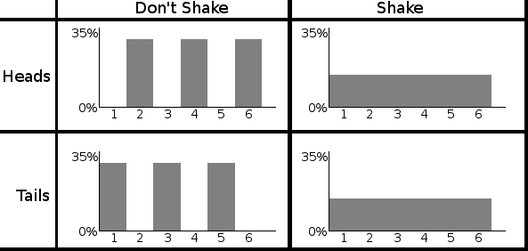
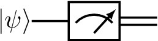

The four postulates of Quantum Mechanics
In this course, our aim is to study computing devices which operate according to the laws of quantum mechanics. Developed during the early 20th century by physicists Max Planck, Albert Einstein, Erwin Schrdinger and many others, quantum mechanics is a set of mathematical laws which describe the behaviour of subatomic particles such as protons, electrons, and photons. Although the theory has proven remarkably successful since its inception, it is nevertheless notoriously counterintuitive, an aspect which we shall explore in this lecture. Quantum mechanics is based on four postulates, which describe the following four intuitive ideas: How to describe a single quantum system, how to perform quantum operations on a quantum system, how to describe multiple quantum systems, and how to measure or extract classical information from a quantum system.
Postulate 1: Individual Quantum systems
Recall that in the classical world, a bit \(x\) can take on one of two values: 0 or 1. In the quantum world, we immediately see a radical departure from this statement, a quantum bit, or qubit, can take on not just 0 or 1, but rather both values 0 and 1 simultaneously. This is a very deep and counterintuitive statement, so it worth reflecting on: it is like saying you can be both asleep and awake at the same time, or here on Earth and simultaneously on Mars at the same time. Indeed, relative to life as we know it, it makes no sense!
Let us formalize this phenomenon. We begin by encoding bits 0 and 1 via the standard basis vectors \(\left|0\right\rangle, \left|1\right\rangle \in \mathbb C^2\) . Then, to denote that a qubit is in states \(\left|0\right\rangle\) and \(\left|1\right\rangle\) simultaneously, we write
This is called a superposition. More generally, we can change the extent to which the qubit is in state \(\left|0\right\rangle\) versus \(\left|0\right\rangle\) via amplitudes \(\alpha,\beta \in \mathbb C\) , i.e.
The only restriction is that \(\left|\psi\right\rangle\) must be a unit vector, i.e. that \(\left|\alpha\right|^2+ \left|\beta\right|^2 = 1\). To summarize, any unit vector in \(\mathbb C^2\) describes the state of a single qubit.
Qubit is a 2-dimensional (which describes a two state system). There is no physical limitation to use qubits: One can use d-state systems, resulting in d-dimensional states (called a qudit). Qudit is described by a unit vector \(\left|\psi\right\rangle \in \mathbb C^d\) , which can be described as
where \(\left|i\right\rangle\in \mathbb C ^d\) denotes the _i_th computational basis vector and \(\alpha_i \in \mathbb C\). Since \(\left|\psi\right\rangle\) is a unit vector, we have \(\sum_{i=0}^{d-1}\left|\alpha_i\right|^2=1\)
Postulate 2: Quantum operations
We next ask: What types of operations or maps can we perform on a qubit? Since a qubit is a vector, the natural choice is a linear map, i.e. multiplication by a matrix. However, not all matrices are fair game it turns out that nature only allows a special class of matrices known as unitary matrices. A unitary matrix \(U \in \mathcal L( \mathbb C^ d )\) is one which satisfies \(UU^\dagger = U^\dagger U = I\). In other words, the inverse of \(U\) is simple to calculate just take the dagger of \(U\) . This immediately yields a key insight all quantum gates (qubit operations) are reversible. Among the most common single qubit gates are the following, known as the Pauli gates, after Austrian-Swiss physicist Wolfgang Pauli:
\(X\) Gate
The \(X\) gate acts as a quantum NOT gate, as we see below:
\(\left|+\right\rangle\) and \(\left|-\right\rangle\) are eigenvectors of \(X\) i.e. \(X\left|+\right\rangle=\left|+\right\rangle\) and \(X\left|-\right\rangle=-\left|-\right\rangle\). The spectral decomposition of \(X\) is hence
\(Z\) Gate
The \(Z\) gate, on the other hand, has no classical analogue. It acts as
In other words, Z leaves \(\left|0\right\rangle\) invariant, but injects a phase of 1 in front of \(\left|1\right\rangle\). This also immediately shows that \(\left|0\right\rangle\) and \(\left|1\right\rangle\) are eigenvectors of Z with eigenvalues 1 and 1, respectively.
The Z gate is special in that it allows us to inject a relative phase into a quantum state. For example,
By relative phase, we mean that only the amplitude on \(\left|1\right\rangle\) had its sign changed (or more generally, was multiplied by a phase \(e^{i\pi} = 1\)). If all the amplitudes in the state were instead multiplied by \(e^{i\pi}\) , then we could simply factor out the ei from the entire state in this case,we would call \(e^{i\pi}\) a global phase. It turns out that a global phase is insignificant in that it cannot be experimentally detected. A relative phase may seemingly also look unimportant - yet, as we shall see in this course, it is one of the features of quantum mechanics which allows quantum computers to outperform classical ones!
Hadamard Gate
Finally, we come to a fourth important unitary gate, the Hadamard gate:
The Hadamard gate is special in that it creates superpositions for us. Namely, we have \(H\left|0\right\rangle =\left|+\right\rangle\) and \(H\left|1\right\rangle =\left|-\right\rangle\). It can also erase superpositions, i.e. \(H\left|+\right\rangle =\left|0\right\rangle\) and \(H\left|-\right\rangle =\left|1\right\rangle\) . In other words, \(H\) is self-inverse we have that \(H^2 = I\) for \(I\) the identity matrix. In fact, the Pauli matrices are also self-inverse.
Quantum Circuits
A quantum circuit is a graphical model for depicting quantum computation. The quantum computation is represented by a sequence of quantum gates, measurements, initializations of qubits to known values, and etc. For example, here are three circuits:

They correspond to evolutions \(X\left|\psi\right\rangle \), \(H\left|\psi\right\rangle\), and \(HX\left|\psi\right\rangle \), respectively. Each wire in such a diagram denotes a quantum system, and a box labelled by gate \(U\) depicts the action of unitary \(U\) . We think of time going from left to right; for the last circuit above, note that the \(X\) appears on the left in the circuit diagram but on the right in the expression \(HX\left|\psi\right\rangle \); this is because \(X\) should be applied first to \(\left|\psi\right\rangle \), then \(H\).
Postulate 3: Composite Quantum Systems
Thus far, we have considered only single quantum systems, i.e. states \(\left|\psi\right\rangle\in \mathbb{C}^d\) for \(d\geq 2\). We need multiple qubits interacting simultaneously for quantum computation. How can we mathematically describe, for example, the joint state of two qubits? The correct Linear Algebraic tool for this task is the tensor product, denoted \(\otimes\). The tensor product allows us to stitch together two vectors. For example when two states \(\left|\psi\right\rangle,\left|\phi\right\rangle\in \mathbb{C}^2\) interact, it results in a larger 4-dimensional vector given by \(\left|\psi\right\rangle\otimes\left|\phi\right\rangle\in \mathbb{C}^4\) . Formally, we have \(\mathbb{C}^2\otimes\mathbb{C}^2=\mathbb{C}^{2\times2}\) . In other words, the entries of a vector \(\left|\psi\right\rangle\otimes\left|\phi\right\rangle\in \mathbb{C}^2\otimes\mathbb{C}^2\) can be referenced via a pair of indices \((i, j)\) for \(i, j \in {0, 1}\), and the specific rule for doing so is
where recall \(\psi_i\) and \(\phi_j\) are the entries of \(\left|\psi\right\rangle\) and \(\left|\phi\right\rangle\), respectively. Here, you should think of the pair \((i, j)\) as representing the bits of a single index \(x \in {0, 1, 2, 3}\). So for example, \((0, 0)\) is equivalent to index 0, (0, 1) to index 1, and (1, 1) to index 3. This implies that we can think of \(\left|\psi\right\rangle\otimes\left|\phi\right\rangle\) as having four entries, i.e. \(\left|\psi\right\rangle\otimes\left|\phi\right\rangle\in \mathbb{C}^4\) . Let us demonstrate with some examples:
Quantum Entanglement
Now that we know how to stitch together a pair of single qubit states, it turns out we have opened Pandoras box. For we can now talk about the two-qubit state which troubled Einstein to the end of his days the innocuous-looking Bell state:
This state demonstrates a quantum phenomenon known as entanglement intuitively, if a pair \(q_0\) and \(q_1\) of qubits are entangled, then they are so tightly bound that one cannot accurately describe the state of \(q_0\) or \(q_1\) alone only the joint state of \(q_0\) and \(q_1\) can be described precisely. In the language of tensor products, this is captured by the following statement: There do not exist \(\left|\psi_1\right\rangle,\left|\psi_2\right\rangle\in \mathbb{C}^d\) such that \(\left|\Phi^+\right\rangle=\left|\psi_1\right\rangle\otimes\left|\psi_2\right\rangle\). In 1935, Einstein, Podolsky and Rosen published a famous paper nowadays referred to as the EPR paper, in which they argue that quantum mechanics cannot be a complete physical theory because it allows the existence of states such as \(\left|\Phi^+\right\rangle\). Fast forwarding a number of decades, we now not only believe entanglement is real, but we know that is is necessary resource for quantum computers to outperform classical ones.
We shall later return to the topic of entanglement, but for now let us remark that there are three other such Bell states:
Note that here we have further simplified notation by letting (e.g.) \(\left|0\right\rangle\left|0\right\rangle=\left|00\right\rangle\). The four Bell states \(\left\{\left|\Phi^+\right\rangle, \left|\Phi^-\right\rangle, \left|\Psi^+\right\rangle, \left|\Psi^-\right\rangle\right\}\) form an orthonormal basis for \(\mathbb{C}^{4}\) known as the Bell basis, after Northern Irish physicist John Bell.
Two-qubit quantum gates.
We have seen that two-qubit quantum states are described by unit vectors in \(\mathbb{C}^{4}\) . We can thus discuss two-qubit quantum gates, i.e. unitary operators \(U \in\mathcal L (\mathbb{C}^{4})\). There are two types of such gates: The first are simply tensor products of one-qubit gates, such as \(X \otimes Z\) or \(H \otimes H\). Here, the tensor product is defined analogously for matrices as it is for vectors. (The formal description is cumbersome, but we follow with a helpful illustration to clarify.) For any \(A \in\mathcal L (\mathbb{C}^{d_1})\),\(B \in\mathcal L (\mathbb{C}^{d_2})\) , \(A \otimes B\) is a \(d_1d_2 \times d_1d_2\) complex matrix whose entries are indexed by \(([d_1] \times [d_2], [d_1] \times [d_2])\) (where \([d] = \{0, . . . , d 1\}\) here), such that
To clarify this definition, suppose
Then \(A\otimes B\) is
In other words, \(A\otimes B\) is obtained by taking four copies of \(B\), each time multiplying by a different scalar entry of \(A\).
The tensor product for matrices shares the properties of the tensor product for vectors, with the addition of two rules below:
In terms of circuit diagrams for tensor products of unitaries are like below: (We consider the cases of \(X \otimes I\), \(I \otimes Z\), and \(H \otimes H\), respectively.)

Finally, we can also consider genuinely two-qubit gates, i.e. gates which are not the tensor product of single qubit gates. One important such gate is the controlled-NOT gate, denoted CNOT. The CNOT treats one qubit as the control qubit, and the other as the target qubit. It then applies the Pauli \(X\) gate to the target qubit only if the control qubit is set to \(\left|1\right\rangle\). More precisely, the action of the CNOT on a two-qubit basis is given as follows, where qubit 1 is the control and qubit 2 is the target
The CNOT gate is given by matrix:
where the second expression is in block matrix form with \(I\) and \(X\) the identity and \(X\) matrices.
The circuit diagram for the CNOT is given by

With this in hand, we can do our first interesting computation we can prepare the Bell state \(\Phi^+\) starting from an initial state of \(\left|00\right\rangle\) The preparation circuit is given as:

Delayed choice quantum eraser
A delayed-choice quantum eraser experiment, first performed by Yoon-Ho Kim, R. Yu, S. P. Kulik, Y. H. Shih and Marlan O. Scully, and reported in early 1999, is an elaboration on the quantum eraser experiment that incorporates concepts considered in Wheelers delayed-choice experiment from late 70s to early 80s . The experiment was designed to investigate peculiar consequences of the well-known double-slit experiment in quantum mechanics, as well as the consequences of quantum entanglement.

An argon laser generates individual 351.1 nm photons that pass through a double-slit apparatus (vertical black line in the upper left corner of the diagram).
An individual photon goes through one (or both) of the two slits. In the illustration, the photon paths are color-coded as red or green lines to indicate which slit the photon came through (red indicates slit A, green indicates slit B).
So far, the experiment is like a conventional two-slit experiment. However, after the slits, spontaneous parametric down-conversion (SPDC) is used to prepare an entangled two-photon state. This is done by a nonlinear optical crystal BBO (beta barium borate) that converts the photon (from either slit) into two identical, orthogonally polarized entangled photons with \(\frac{1}{2}\) the frequency of the original photon. The paths followed by these orthogonally polarized photons are caused to diverge by the GlanThompson prism.
One of these 702.2 nm photons, referred to as the signal photon (look at the red and green lines going upwards from the GlanThompson prism) continues to the target detector called \(D_0\). During an experiment, detector \(D_0\) is scanned along its x axis, its motions controlled by a step motor. A plot of signal photon counts detected by \(D_0\) versus x can be examined to discover whether the cumulative signal forms an interference pattern.
The other entangled photon, referred to as the idler photon (look at the red and green lines going downwards from the GlanThompson prism), is deflected by prism PS that sends it along divergent paths depending on whether it came from slit A or slit B.
Somewhat beyond the path split, the idler photons encounter beam splitters \(S_a\), \(S_b\), and \(S_c\) that each have a 50% chance of allowing the idler photon to pass through and a 50% chance of causing it to be reflected. \(M_a\) and \(M_b\) are mirrors.
The beam splitters and mirrors direct the idler photons towards detectors labeled \(D_1\), \(D_2\), \(D_3\) and \(D_4\). Note that:
If an idler photon is recorded at detector \(D_3\), it can only have come from slit B.
If an idler photon is recorded at detector \(D_4\), it can only have come from slit A.
If an idler photon is detected at detector \(D_1\) or \(D_2\), it might have come from slit A or slit B.
The optical path length measured from slit to \(D_1\), \(D_2\), \(D_3\) and \(D_4\) is 2.5 m longer than the optical path length from slit to \(D_0\). This means that any information that one can learn from an idler photon must be approximately 8 ns later than what one can learn from its entangled signal photon.
Lets call the green path \(\left|0\right\rangle\) and red path \(\left|1\right\rangle\). The double slit can be described by a Hadamard gate. The SPDC corresponds to a CNOT-gate. The state after the SPDC \(\frac{1}{2} \left(\left|00\right\rangle+\left|11\right\rangle\right)\). There is a phase \(\phi\) depending on the position \(x\) of the detector \(D_0\), which corresponds to a phase gate \(R_\phi\). The state before the measurement is
Detection of the idler photon by \(D_3\) or \(D_4\) provides delayed which-path information indicating whether the signal photon with which it is entangled had gone through slit A or B. On the other hand, detection of the idler photon by \(D_1\) or \(D_2\) provides a delayed indication that such information is not available for its entangled signal photon. Insofar as which-path information had earlier potentially been available from the idler photon, it is said that the information has been subjected to a delayed erasure.
When the experimenters looked at the signal photons whose entangled idlers were detected at \(D_1\) or \(D_2\), they detected interference patterns.
However, when they looked at the signal photons whose entangled idlers were detected at \(D_3\) or \(D_4\), they detected simple diffraction patterns with no interference.
Lets look at the probability to measure the a photon in \(D_0\).
If we measure the second photon in \(D_3\) or \(D_4\), the post measurement state collapses to \(\left|\pm\right\rangle\) basis. Then the probability for a click in \(D_0\) is \(\frac{1}{2}\) . This is independent of the phase: no interference.
If we measure the second photon in \(D_1\) or \(D_2\), the probability for a click at \(D_0\) is \(\frac{1}{2}\left(1\mp \cos\phi\right)\), so here we see the interference. Whether we see interference or not depends on the basis choice on the second system, which can be delayed.

 Simulated joint detection rates between \(D_0\) and \(D_1\), \(D_2\), \(D_3\), \(D_4\) (\(R_{01}\), \(R_{02}\), \(R_{03}\), \(R_{04}\)).
Simulated joint detection rates between \(D_0\) and \(D_1\), \(D_2\), \(D_3\), \(D_4\) (\(R_{01}\), \(R_{02}\), \(R_{03}\), \(R_{04}\)).

As you can see I have omitted the coincidence counter from the above description, similar to many people who talked about this experiment. Actually this is a key element. The coincidence counter would appear as a purely electronic device that acts on measurements. So if you would cast it as a quantum circuit it would look like this:


The data was always the same! The erasure only changes how we analyse the data, i.e. what we keep and what we discard. This is done after the measurement, using an electronic circuit. Theres no time travel, no disproof of materialism, just plain ol correlation being mistaken for causation.
A full circuit can be found here for reference purposes
In fact you can even make classical analogues: Bob has a six-sided die, a two-sided coin, and a small empty box to put the coin in. He rolls the die, gets a result between 1 and 6, and places the coin in the box in a way that depends on the die roll. If the die roll was even, the coin is placed heads up. If the die roll was odd, the coin is placed tails up. Bob then writes down his die roll, and carefully hands the box to Alice.
Alice now has to decide to either a) just open the box or b) shake the box before opening it. (Shaking the box randomizes the coin.) Once the box is open, she writes down whether the coin was face up or face down, and also writes down whether or not she shook the box.

The tweaked delayed choice quantum eraser so that there isnt a classical analogue is called a Bell test, however it lacks the characteristics of the delayed choice quantum eraser. For example, in order to avoid the signalling loophole, the choice can no longer be delayed.
Postulate 4: Measurement
How do we mathematically model the act of measuring or observing a quantum system considering that the very act of looking at or observing a quantum system irreversibly alters the state of the system? To model this phenomenon, we shall use the notion of a projective or von Neumann measurement (named after Hungarian child prodigy and mathematician, John von Neumann, who was apparently already familiar with calculus at the age of 8). To do so, we must define three classes of linear operators, each of which is increasingly more restricted. All three classes will prove vital throughout this course.
Hermitian operators: An operator \(M \in \mathcal L \left(\mathbb C^d \right)\) is Hermitian if \(M = M^\dagger\) . Examples you are already familiar with are the Pauli \(X\), \(Y\) , and \(Z\) gates, which are not only unitary, but also Hermitian. A Hermitian operator has the important property that all of its eigenvalues are real. Thus, Hermitian operators can be thought of as a higher dimensional generalization of the real numbers.
Positive semi-definite operators: If a Hermitian operator has only non-negative eigenvalues, then it is called positive-semidefinite. Thus, positive semi-definite (or positive for short) matrices generalize the non-negative real numbers.
Orthogonal projection operators: A Hermitian matrix \(\Pi \in \mathcal L \left(\mathbb C^d \right)\) is an orthogonal projection operator (or projector for short) if \(\Pi^2=\Pi\). This is equivalent to saying \(\Pi\) has only eigenvalues 0 and 1. Let us prove this equivalence briefly: Since \(\Pi\) is Hermitian, we can take its spectral decomposition, \(\Pi = \sum_i \lambda_i \left|\lambda_i\right\rangle\left\langle\lambda_i\right|\). Hence, $\( \sum_i \lambda_i \left|\lambda_i\right\rangle\left\langle\lambda_i\right|=\Pi =\Pi^2=\left(\sum_i \lambda_i \left|\lambda_i\right\rangle\left\langle\lambda_i\right|\right)\left(\sum_i \lambda_i \left|\lambda_i\right\rangle\left\langle\lambda_i\right|\right)=\sum_i \lambda_i^2 \left|\lambda_i\right\rangle\left\langle\lambda_i\right| \)$ where the last equality follows since {|i i} is an orthonormal basis. Since the |i i are orthogonal, we thus have that for all i, i = 2i . But this can only hold if i {0, 1}, as claimed.
It is important to note that since a projector \(\Pi\)s eigenvalues are all 0 or 1, its spectral decomposition must take the form \(\Pi=\sum_i \left|\psi_i\right\rangle\left\langle\psi_i\right|\), where \(\left\{\left|\psi_i\right\rangle\right\}\) are an orthonormal set. Conversely, summing any set of orthonormal \(\left\{\left|\psi_i\right\rangle\right\}\) in this fashion yields projector. Observe that a projector \(\Pi\) has rank 1 if and only if \(\Pi=\left|\psi\right\rangle\left\langle\psi\right|\) for some \(\left|\psi_i\right\rangle \in \mathbb C ^ d \) , since the rank of \(\Pi\) equals the number of non-zero eigenvalues of \(\Pi\), and here \(\Pi=\left|\psi\right\rangle\left\langle\psi\right|\) is a spectral decomposition of \(\Pi\). Finally,let us develop an intuition for what a projector actually does for any projector \(\Pi=\sum_i \left|\psi_i\right\rangle\left\langle\psi_i\right|\) and state \(\left|\phi\right\rangle\) to be measured, we have $\( \Pi\left|\phi\right\rangle=\left(\sum_i \left|\psi_i\right\rangle\left\langle\psi_i\right|\right)\left|\phi\right\rangle=\sum_i \left|\psi_i\right\rangle\left(\left\langle\psi_i\middle|\phi\right\rangle\right)=\sum_i \left(\left\langle\psi_i\middle|\phi\right\rangle\right)\left|\psi_i\right\rangle\in\text{Span}\left\{\left|\psi_i\right\rangle\right\} \)$
where note \(\left\langle\psi_i\middle|\phi\right\rangle\in \mathbb C\). Thus, \(\Pi\) projects us down onto the span of the vectors \(\left\{\left|\psi_i\right\rangle\right\}\).
Projective Measurements.
With projectors in hand, we can now define a projective measurement. A projective measurement is a set of projectors \(B = \left\{\Pi_i\right\}_{i=0}^m\) such that \(\sum_{i=0}^m \Pi_i = I\). The latter condition is called the completeness relation. If each \(\Pi_i\) is rank one, i.e. \(\Pi_i=\left|\psi_i\right\rangle\left\langle\psi_i\right|\), then we say that \(B\) models a measurement in basis \(\left\{\left|\psi_i\right\rangle\right\}\). Often, we shall measure in the computational basis, which is specified by \(B= \left\{\left|0\right\rangle\left\langle0\right|,\left|1\right\rangle\left\langle1\right|\right\}\) in the case of \(\mathbb C ^ 2\) (and generalizes as \(B= \left\{\left|i\right\rangle\left\langle,\right|\right\}_{i=0}^{d-1}\) for \(\mathbb C^d\))
With a projective measurement \(B = \left\{\Pi_i\right\}_{i=0}^m\subseteq\mathbb C^d\) in hand, let us specify how one uses \(B\). Suppose our quantum system is in state \(\left|\psi\right\rangle\in\mathbb C^d\) . Then, the probability of obtaining outcome \(i \in \{0, . . . , m\}\) when measuring \(\left|\psi\right\rangle\) with \(B\) is given by $\( \text{Pr}(\text{outcome } i) = \text{Tr}\left(\Pi_i \left|\psi\right\rangle \left\langle\psi\right|\Pi_i \right) = \text{Tr}\left(\Pi_i^2 \left|\psi\right\rangle \left\langle\psi\right|\right) = \text{Tr}\left(\Pi_i \left|\psi\right\rangle \left\langle\psi\right|\right), \)\( where the second equality follows by the cyclic property of the trace and the third since \)\Pi_i$ is a projector.
The exercise above has an important moral requiring a quantum state \(\left|\psi\right\rangle\) to be a unit vector (i.e. \(\left|\alpha\right|^2 + \left|\beta\right|^2 = 1\)) ensures that when measuring \(\left|\psi\right\rangle\), the distribution over the outcomes is a valid probability distribution, i.e. the probabilities for all possible outcomes sum to 1. The other important take-home message here is that measurements in quantum mechanics are inherently probabilistic in general, the outcomes cannot be perfectly predicted! Finally, we started this lecture by saying that the very act of measuring a quantum state disturbs the system. Let us now formalize this; we will crucially use the fact discussed earlier that a projector projects a vector \(\left|\psi\right\rangle\) down into a smaller subspace. Specifically, upon obtaining outcome \(\Pi_i\) when measuring \(B\), the state of system collapses to
Note the denominator above is a scalar, and is just the probability of outcome \(i\). There are two points here which may confuse you: Why have we written the output state as a matrix \(\Pi_i \left|\psi\right\rangle \left\langle\psi\right|\Pi_i\) rather than a vector \(\Pi_i \left|\psi\right\rangle\), and what is the role of the denominator? Let us handle each of these in order.
First, conditioned on outcome \(\Pi_i\) , the output state is indeed a vector, namely \(\Pi_i \left|\psi\right\rangle\). However, there is a more general formalism which we shall discuss shortly called the density operator formalism, in which quantum states are written as matrices, not vectors. Specifically, the density matrix representing vector \(\left|\psi\right\rangle\) would be written as matrix \(\left|\psi\right\rangle \left\langle\psi\right|\). The density operator formalism is more general than the state vector approach we have taken so far, and will be crucial for studying individual subsystems of a larger composite quantum state. Thus, the answer to question 1 is that we have written the output as a matrix simply to slowly ease the transition into the density matrix formalism.
The motive behind question 2 is somewhat less sinister the problem here is that since we projected out part of \(\left|\psi\right\rangle\) during the measurement, the output \(\Pi_i \left|\psi\right\rangle\) may not necessarily be normalized. To renormalize \(\Pi_i \left|\psi\right\rangle\), we simply divide by its Euclidean norm to obtain
The state \(\left|\psi^\prime\right\rangle\) describes the post-measurement state of our system, assuming we have obtained outcome \(i\).
A final quirk we should iron out is the following in terms of measurements, what is the consequence of the fact that a projector \(\Pi_i\) satisfies \(\Pi_i^2 = \Pi_i\) ? Well, if you observe a quantum system now, and then again five minutes from now, and if the system has not been subjected to any gates or noise in between the measurements, then the two measurement results you obtain should agree (I realize the study of quantum mechanics has likely distorted your view of when you can trust your intuition, but this is one case in which you can). To model this, suppose we measure using \(B = \{\Pi_i\}\) and obtain results \(i\) and \(j\) in measurements 1 and 2, respectively. Then:
To simplify this expression, we use the fact that if the completeness relation holds for projectors \(\{\Pi_i\}\), i.e. \(\sum_i \Pi_i = I\), then it turns out that \(\Pi_j \Pi_1 = \delta_{ij} \Pi_i\), where recall \(\delta_ij\) is the Kronecker delta. Thus, if \(i\neq j\), above equation equals to 0, and if \(i = j\), it reduces to $\( \frac{\text{Tr}\Pi_j\Pi_i \left|\psi\right\rangle \left\langle\psi\right|\Pi_i\Pi_j }{\text{Tr}\left(\Pi_i \left|\psi\right\rangle \left\langle\psi\right| \right)}=\frac{\text{Tr}\left(\Pi_i^2 \left|\psi\right\rangle \left\langle\psi\right|\Pi_i^2 \right)}{\text{Tr}\left(\Pi_i \left|\psi\right\rangle \left\langle\psi\right| \right)}=\frac{\text{Tr}\left(\Pi_i \left|\psi\right\rangle \left\langle\psi\right|\Pi_i\right) }{\text{Tr}\left(\Pi_i \left|\psi\right\rangle \left\langle\psi\right| \right)}=\frac{\text{Tr}\left(\Pi_i \left|\psi\right\rangle \left\langle\psi\right|\right)}{\text{Tr}\left(\Pi_i \left|\psi\right\rangle \left\langle\psi\right| \right)}=1 \)$ i.e. measuring the state a second time again yields outcome i with probability 1, as desired. Thus, although observing a state for the first time disturbs it, subsequent measurements will consistently return the same measurement result!
We close this section by giving the circuit symbol which denotes a measurement of a qubit \(\left|\psi\right\rangle \in \mathbb C^2\) in the computational basis \(B= \left\{\left|0\right\rangle\left\langle0\right|,\left|1\right\rangle\left\langle1\right|\right\}\):

The double-wires on the right side indicate that the output of the measurement is a classical string (indicating which measurement outcome was obtained).
Quantum Teleportation
With the concepts of the Bell state and measurement in hand, we can discuss our first neat computational trick: Quantum teleportation. Suppose you have a single-qubit quantum state \(\left|\psi\right\rangle= \alpha\left|0\right\rangle + \beta\left|1\right\rangle \) in your possession (i.e. as a physical system, not on paper), but that you do not know the values of \(\alpha\) and \(\beta\). Your friend Alice now phones you and asks to borrow your state. How can you send it to her? One obvious way is simply to pop your system in the mail and physically send it over. However, it turns out that by exploiting the phenomenon of entanglement, you can do something incredible by sending two classical bits over the telephone to Alice, you can teleport \(\left|\psi\right\rangle\) instantly to her!
To teleport \(\left|\psi\right\rangle\), we assume that you and Alice each share half of a Bell state \(\left|\Phi^+\right\rangle=\frac{1}{\sqrt 2}\left(\left|00\right\rangle+\left|11\right\rangle\right)\) to begin with; specifically, you hold qubit 1 of \(\left|\Phi^+\right\rangle\), and Alice holds qubit 2. The teleportation circuit is then given as follows:

Let us break this down piece by piece. The first two wires are held by you; wire 1 holds the state to be teleported, \(\left|\psi\right\rangle\), and wire 2 holds your half of \(\left|\Phi^+\right\rangle\). The third wire holds Alices half of \(\left|\Phi^+\right\rangle\). Note that we have used \(\left|\Phi^+_A\right\rangle\) and \(\left|\Phi^+_B\right\rangle\) to denote the two halves of \(\left|\Phi^+\right\rangle\), but this is poor notation read literally, this diagram suggests \(\left|\Phi^+\right\rangle=\left|\Phi^+_A\right\rangle\otimes\left|\Phi^+_B\right\rangle\), which is not true since is \(\left|\Phi^+\right\rangle\) entangled, and hence from last lecture we know that there do not exist states \(\left|\Phi^+_A\right\rangle\) and \(\left|\Phi^+_B\right\rangle\) such that \(\left|\Phi^+\right\rangle=\left|\Phi^+_A\right\rangle\otimes\left|\Phi^+_B\right\rangle\) This notation is for illustration purposes only, not to complicate the diagram, and make our analysis easy.
The circuit can be divided into 5 steps: Step 1 performs the CNOT, Step 2 the Hadamard gate, Step 3 measures qubits 1 and 2, Step 4 applies a conditional X gate, and Step 5 applies a conditional Z gate. The latter two require clarification: The conditional X gate here takes a classical bit \(b\) as input (hence the incoming wire at the top is a double line), and applies X if and only if \(b = 1\). The conditional Z gate is defined analogously.
Now that we have technically parsed this diagram, let us intuitively parse it. First, you begin in Steps 1 and 2 by performing a CNOT and Hadamard on your qubits, followed by a standard basis measurement in Step 3. Since a measurement in the standard basis maps each qubit to either \(\left|0\right\rangle\) or \(\left|1\right\rangle\), the output of your two measurements can jointly be thought of as one of the four bit strings \(00\), \(01\), \(10\), or \(11\). Call these bits \(b_0 b_1\) . Now you pick up the telephone, call Alice, and tell her the value of \(b_0 b_1\) . Conditioned on \(b_0 \) , she applies X to her half of the Bell pair, followed by Z conditioned on \(b_1\). The claim is that at this point, Alices qubits state has been magically converted to \(\left|\psi\right\rangle\). In fact, as we shall see shortly, \(\left|\psi\right\rangle\) has also disappeared from your possession! In this sense, teleportation has taken place.
Let us formally analyze the action of this circuit. Denote by \(\left|\psi_1\right\rangle\) for \(i \in \{0, . . . , 5\}\) the joint state of your and Alices systems immediately after Step \(i\) has taken place. Here, we define \(\left|\psi_0\right\rangle\) as the initial joint state before any gates are applied; it is given by
After Step 1, i.e. after the CNOT, we have state
After Step 2, i.e. after the Hadamard gate, we have
Let us now pause and analyze the state of affairs. There are four terms in this superposition, each of which begins with a distinct bit string \(\left|00\right\rangle\), \(\left|01\right\rangle\), \(\left|10\right\rangle\), or \(\left|11\right\rangle\). This means that if you now measure qubits 1 and 2 in the standard basis and obtain outcome (say) \(\left|00\right\rangle\), then Alices qubit on wire 3 collapses to the only consistent possibility, \(\alpha\left|0\right\rangle + \beta\left|1\right\rangle\). In this case, teleportation has already taken place.
More generally, the four possible outcomes upon measuring qubits 1 and 2 result in four distinct residual states on Alices qubit as follows: $\( 00\rightarrow\alpha\left|0\right\rangle + \beta\left|1\right\rangle\qquad 01\rightarrow\alpha\left|1\right\rangle + \beta\left|0\right\rangle\qquad 10\rightarrow\alpha\left|0\right\rangle - \beta\left|1\right\rangle\qquad 11\rightarrow\alpha\left|1\right\rangle - \beta\left|0\right\rangle \)$
Thus, if you simply send the two bits \(b_0 b_1\) encoding the measurement outcome to Alice, then regardless of the value of \(b_0 b_1\) , she can recover your original state \(\left|\psi\right\rangle=\alpha\left|0\right\rangle + \beta\left|1\right\rangle \) via the following identities:
In other words, by conditionally applying X and Z based on the outputs \(b_0 b_1\) from your measurement, Alice can successfully recover your state \(\left|\psi\right\rangle=\alpha\left|0\right\rangle + \beta\left|1\right\rangle \) . This is precisely what is depicted in Steps 4 and 5 of the teleportation circuit. Finally, note that since measuring your qubits leaves you in one of the four standard basis states \(\left|00\right\rangle\), \(\left|01\right\rangle\), \(\left|10\right\rangle\), or \(\left|11\right\rangle\) the state \(\left|\psi\right\rangle\) has now disappeared from your possession!
Preliminary
First of all, lets see if your qiskit installation is working. If not, please follow the instructions for installing qiskit in your own pc using conda, or run this book in the IBM cloud directly.
import qiskit.tools.jupyter
%qiskit_version_table
Version Information
| Qiskit Software | Version |
|---|---|
qiskit-terra | 0.22.0 |
qiskit-aer | 0.11.0 |
qiskit-ibmq-provider | 0.19.2 |
qiskit | 0.39.0 |
| System information | |
| Python version | 3.8.13 |
| Python compiler | GCC 7.5.0 |
| Python build | default, Mar 28 2022 11:38:47 |
| OS | Linux |
| CPUs | 24 |
| Memory (Gb) | 62.64844512939453 |
| Thu Oct 27 12:57:08 2022 +03 | |
Exploring Qubits with Qiskit
Classical bits always have a completely well-defined state: they are either 0 or 1 at every point during a computation. There is no more detail we can add to the state of a bit than this. So to write down the state of a of classical bit (c), we can just use these two binary values. For example:
This restriction is lifted for quantum bits. Whether we get a \(0\) or a \(1\) from a qubit only needs to be well-defined when a measurement is made to extract an output. At that point, it must commit to one of these two options. At all other times, its state will be something more complex than can be captured by a simple binary value.
To see how to describe these, we can first focus on the two simplest cases. It is possible to prepare a qubit in a state for which it definitely gives the outcome \(0\) when measured.
We need a name for this state. Lets be unimaginative and call it 0. Similarly, there exists a qubit state that is certain to output a \(1\). Well call this 1. These two states are completely mutually exclusive. Either the qubit definitely outputs a \(0\), or it definitely outputs a \(1\). There is no overlap. One way to represent this with mathematics is to use two orthogonal vectors.
With vectors we can describe more complex states than just \(\left|0\right\rangle\) and \(\left|1\right\rangle\). For example, consider the vector
Since the states \(\left|0\right\rangle\) and \(\left|1\right\rangle\) form an orthonormal basis, we can represent any 2D vector with a combination of these two states. This allows us to write the state of our qubit in the alternative form:
This vector, \(\left|q_0\right\rangle\) is called the qubits statevector, it tells us everything we could possibly know about this qubit. For now, we are only able to draw a few simple conclusions about this particular example of a statevector: it is not entirely \(\left|0\right\rangle\) and not entirely \(\left|1\right\rangle\). Instead, it is described by a linear combination of the two. In quantum mechanics, we typically describe linear combinations such as this using the word superposition.
Though our example state \(\left|q_0\right\rangle\) can be expressed as a superposition of \(\left|0\right\rangle\) and \(\left|1\right\rangle\), it is no less a definite and well-defined qubit state than they are. To see this, we can begin to explore how a qubit can be manipulated
First, we need to import all the tools we will need:
from qiskit import QuantumCircuit, assemble, Aer
from qiskit.visualization import plot_histogram, plot_bloch_vector
from math import sqrt, pi
In Qiskit, we use the QuantumCircuit object to store our circuits, this is essentially a list of the quantum operations on our circuit and the qubits they are applied to.
qc = QuantumCircuit(1) # Create a quantum circuit with one qubit
In our quantum circuits, our qubits always start out in the state \(\left|q_0\right\rangle\). We can use the initialize() method to transform this into any state. We give initialize() the vector we want in the form of a list, and tell it which qubit(s) we want to initialize in this state:
qc = QuantumCircuit(1) # Create a quantum circuit with one qubit
initial_state = [0,1] # Define initial_state as |1>
qc.initialize(initial_state, 0) # Apply initialisation operation to the 0th qubit
qc.draw('mpl') # Let's view our circuit
We can then use one of Qiskits simulators to view the resulting state of our qubit.
sim = Aer.get_backend('aer_simulator') # Tell Qiskit how to simulate our circuit
To get the results from our circuit, we use run to execute our circuit, giving the circuit and the backend as arguments. We then use .result() to get the result of this:
qc = QuantumCircuit(1) # Create a quantum circuit with one qubit
initial_state = [0,1] # Define initial_state as |1>
qc.initialize(initial_state, 0) # Apply initialisation operation to the 0th qubit
qc.save_statevector() # Tell simulator to save statevector
qobj = assemble(qc) # Create a Qobj from the circuit for the simulator to run
result = sim.run(qobj).result() # Do the simulation and return the result
from result, we can then get the final statevector using .get_statevector():
out_state = result.get_statevector()
print(out_state) # Display the output state vector
Statevector([0.+0.j, 1.+0.j],
dims=(2,))
Note: Python uses \(j\) to represent \(i\) in complex numbers. We see a vector with two complex elements: \(0.+0.j = 0\), and \(1.+0.j = 1\).
Lets now measure our qubit as we would in a real quantum computer and see the result:
qc.measure_all()
qc.draw('mpl')
This time, instead of the statevector we will get the counts for the \(0\) and \(1\) results using .get_counts():
qobj = assemble(qc)
result = sim.run(qobj).result()
counts = result.get_counts()
plot_histogram(counts)
We can see that we (unsurprisingly) have a 100% chance of measuring \(\left|1\right\rangle\). This time, lets instead put our qubit into a superposition and see what happens. We will use the state \(\left|q_0\right\rangle\) from earlier :
We need to add these amplitudes to a python list. To add a complex amplitude, Python uses \(j\) for the imaginary unit (we normally call it \(i\) mathematically):
initial_state = [1/sqrt(2), 1j/sqrt(2)] # Define state |q_0>
And we then repeat the steps for initialising the qubit as before:
qc = QuantumCircuit(1) # Must redefine qc
qc.initialize(initial_state, 0) # Initialize the 0th qubit in the state `initial_state`
qc.save_statevector() # Save statevector
qobj = assemble(qc)
state = sim.run(qobj).result().get_statevector() # Execute the circuit
print(state) # Print the result
Statevector([0.70710678+0.j , 0. +0.70710678j],
dims=(2,))
qobj = assemble(qc)
results = sim.run(qobj).result().get_counts()
plot_histogram(results)

We can see we have equal probability of measuring either \(\left|0\right\rangle\) or \(\left|1\right\rangle\). To explain this, we need to talk about measurement.
The Rules of Measurement
Remember: To find the probability of measuring a state \(\left|\psi\right\rangle\) in the state \(\left|x\right\rangle\) we do:
In the equation above, \(\left|x\right\rangle\) can be any qubit state. To find the probability of measuring \(\left|x\right\rangle\), we take the inner product of \(\left|x\right\rangle\) and the state we are measuring (in this case \(\left|\psi\right\rangle\)), then square the magnitude. This may seem a little convoluted, but it will soon become second nature.
If we look at the state \(\left|q_0\right\rangle\) from before, we can see the probability of measuring \(\left|0\right\rangle\) is indeed \(0.5\) :
This rule governs how we get information out of quantum states. It is therefore very important for everything we do in quantum computation. It also immediately implies several important facts
Normalisation
The rule shows us that amplitudes are related to probabilities. If we want the probabilities to add up to 1 (which they should!), we need to ensure that the statevector is properly normalized. Specifically, we need the magnitude of the state vector to be 1.
Thus if:
Then:
This explains the factors of \(\sqrt{2}\) you have seen throughout this hands-on. In fact, if we try to give initialize() a vector that isnt normalised, it will give us an error:
vector = [1,1]
qc.initialize(vector, 0)
---------------------------------------------------------------------------
QiskitError Traceback (most recent call last)
Input In [13], in <cell line: 2>()
1 vector = [1,1]
----> 2 qc.initialize(vector, 0)
File ~/Prog/miniconda3/envs/qml/lib/python3.8/site-packages/qiskit/extensions/quantum_initializer/initializer.py:191, in initialize(self, params, qubits)
188 qubits = [qubits]
189 num_qubits = len(qubits) if isinstance(params, int) else None
--> 191 return self.append(Initialize(params, num_qubits), qubits)
File ~/Prog/miniconda3/envs/qml/lib/python3.8/site-packages/qiskit/extensions/quantum_initializer/initializer.py:57, in Initialize.__init__(self, params, num_qubits)
36 def __init__(self, params, num_qubits=None):
37 r"""Create new initialize composite.
38
39 Args:
(...)
55 and the remaining 3 qubits to be initialized to :math:`|0\rangle`.
56 """
---> 57 self._stateprep = StatePreparation(params, num_qubits)
59 super().__init__("initialize", self._stateprep.num_qubits, 0, self._stateprep.params)
File ~/Prog/miniconda3/envs/qml/lib/python3.8/site-packages/qiskit/circuit/library/data_preparation/state_preparation.py:99, in StatePreparation.__init__(self, params, num_qubits, inverse, label)
96 self._from_label = isinstance(params, str)
97 self._from_int = isinstance(params, int)
---> 99 num_qubits = self._get_num_qubits(num_qubits, params)
101 params = [params] if isinstance(params, int) else params
103 super().__init__(self._name, num_qubits, params, label=self._label)
File ~/Prog/miniconda3/envs/qml/lib/python3.8/site-packages/qiskit/circuit/library/data_preparation/state_preparation.py:202, in StatePreparation._get_num_qubits(self, num_qubits, params)
200 # Check if probabilities (amplitudes squared) sum to 1
201 if not math.isclose(sum(np.absolute(params) ** 2), 1.0, abs_tol=_EPS):
--> 202 raise QiskitError("Sum of amplitudes-squared does not equal one.")
204 num_qubits = int(num_qubits)
205 return num_qubits
QiskitError: 'Sum of amplitudes-squared does not equal one.'
In class exercise
Create a state vector that will give a 1/3 probability of measuring \(\left|0\right\rangle\).
Create a different state vector that will give the same measurement probabilities.
Verify that the probability of measuring \left|1\right\rangle for these two states is 2/3.
##Fill me
Alternative measurement
The measurement rule gives us the probability \(p\left(\left|x\right\rangle\right)\) that a state \(\left|\psi\right\rangle\) is measured as \(\left|x\right\rangle\). Nowhere does it tell us that \(\left|x\right\rangle\) can only be either \(\left|0\right\rangle\) or \(\left|1\right\rangle\).
The measurements we have considered so far are in fact only one of an infinite number of possible ways to measure a qubit. For any orthogonal pair of states, we can define a measurement that would cause a qubit to choose between the two.
This possibility will be explored more in the next section. For now, just bear in mind that \(\left|x\right\rangle\) is not limited to being simply \(\left|0\right\rangle\) or \(\left|1\right\rangle\).
Global Phase
We know that measuring the state \(\left|1\right\rangle\) will give us the output \(1\) with certainty. But we are also able to write down states such as
To see how this behaves, we apply the measurement rule.
Here we find that the factor of \(i\) disappears once we take the magnitude of the complex number. This effect is completely independent of the measured state \(\left|x\right\rangle\). It does not matter what measurement we are considering, the probabilities for the state \(i\left|1\right\rangle\) are identical to those for \(\left|1\right\rangle\). Since measurements are the only way we can extract any information from a qubit, this implies that these two states are equivalent in all ways that are physically relevant.
More generally, we refer to any overall factor \(\gamma\) on a state for which \(\left|\gamma\right|=1\) as a global phase. States that differ only by a global phase are physically indistinguishable.
Note that this is distinct from the phase difference between terms in a superposition, which is known as the relative phase. This becomes relevant once we consider different types of measurement and multiple qubits.
The Observer Effect
We know that the amplitudes contain information about the probability of us finding the qubit in a specific state, but once we have measured the qubit, we know with certainty what the state of the qubit is. For example, if we measure a qubit in the state:
And find it in the state \(\left|0\right\rangle\), if we measure again, there is a 100% chance of finding the qubit in the state \(\left|0\right\rangle\). This means the act of measuring changes the state of our qubits.
We sometimes refer to this as collapsing the state of the qubit. It is a potent effect, and so one that must be used wisely. For example, were we to constantly measure each of our qubits to keep track of their value at each point in a computation, they would always simply be in a well-defined state of either \(\left|0\right\rangle\) or \(\left|1\right\rangle\). As such, they would be no different from classical bits and our computation could be easily replaced by a classical computation. To achieve truly quantum computation we must allow the qubits to explore more complex states. Measurements are therefore only used when we need to extract an output. This means that we often place all the measurements at the end of our quantum circuit.
We can demonstrate this using Qiskits statevector simulator. Lets initialize a qubit in superposition:
qc = QuantumCircuit(1) # We are redefining qc
initial_state = [0.+1.j/sqrt(2),1/sqrt(2)+0.j]
qc.initialize(initial_state, 0)
qc.draw('mpl')

This should initialize our qubit in the state:
We can verify this using the simulator:
qc.save_statevector()
result = sim.run(assemble(qc)).result()
state = result.get_statevector()
print("Qubit State = " + str(state))
Qubit State = Statevector([0. +0.70710678j, 0.70710678+0.j ],
dims=(2,))
We can see here the qubit is initialized in the state [0.+0.70710678j 0.70710678+0.j], which is the state we expected.
Lets now create a circuit where we measure this qubit
qc = QuantumCircuit(1) # We are redefining qc
initial_state = [0.+1.j/sqrt(2),1/sqrt(2)+0.j]
qc.initialize(initial_state, 0)
qc.measure_all()
qc.save_statevector()
qc.draw('mpl')

When we simulate this entire circuit, we can see that one of the amplitudes is always \(0\):
qobj = assemble(qc)
state = sim.run(qobj).result().get_statevector()
print("State of Measured Qubit = " + str(state))
State of Measured Qubit = Statevector([0.+0.j, 1.+0.j],
dims=(2,))
You can re-run this cell a few times to reinitialize the qubit and measure it again. You will notice that either outcome is equally probable, but that the state of the qubit is never a superposition of \(\left|0\right\rangle\) and \(\left|1\right\rangle\). Somewhat interestingly, the global phase on the state \(\left|0\right\rangle\) survives, but since this is global phase, we can never measure it on a real quantum computer.
A Note about Quantum Simulators
We can see that writing down a qubits state requires keeping track of two complex numbers, but when using a real quantum computer we will only ever receive a yes-or-no (0 or 1) answer for each qubit. The output of a 10-qubit quantum computer will look like this:
Just 10 bits, no superposition or complex amplitudes. When using a real quantum computer, we cannot see the states of our qubits mid-computation, as this would destroy them! This behaviour is not ideal for learning, so Qiskit provides different quantum simulators: By default, the aer_simulator mimics the execution of a real quantum computer, but will also allow you to peek at quantum states before measurement if we include certain instructions in our circuit. For example, here we have included the instruction .save_statevector(), which means we can use .get_statevector() on the result of the simulation.
The Bloch Sphere
We saw earlier in this chapter that the general state of a qubit \(\left|q\right\rangle\) is:
(The second line tells us \(\alpha\) and \(\beta\) are complex numbers). We know that we cannot differentiate between some of these states. This means we can be more specific in our description of the qubit.
Firstly, since we cannot measure global phase, we can only measure the difference in phase between the states \(\left|0\right\rangle\) and \(\left|1\right\rangle\). Instead of having \(\alpha\) and \(\beta\) be complex, we can confine them to the real numbers and add a term to tell us the relative phase between them:
Finally, since the qubit state must be normalised, i.e.
we can use the trigonometric identity:
to describe the real \(\alpha\) and \(\beta\) in terms of one variable, \(\theta\) :
From this we can describe the state of any qubit using the two variables \(\phi\) and \(\theta\) :
If we interpret \(\phi\) and \(\theta\) as spherical co-ordinates (\(r=1\), since the magnitude of the qubit state is 1), we can plot any single qubit state on the surface of a sphere, known as the Bloch sphere.
Below we have plotted a qubit in the state \(\left|+\right\rangle\). In this case, \(\theta=\pi/2\) and \(\phi=0\).
plot_bloch_vector(bloch=[1,pi/2,0],title='example',coord_type='spherical')

In Class Exercise
Use plot_bloch_vector() to plot a qubit in the states:
\(\left|0\right\rangle\)
\(\left|1\right\rangle\)
\(\frac{1}{\sqrt 2}\left(\left|0\right\rangle+\left|1\right\rangle\right)\)
\(\frac{1}{\sqrt 2}\left(\left|0\right\rangle-i\left|1\right\rangle\right)\)
\(\frac{1}{\sqrt 2} \begin{pmatrix} i \\ 1 \end{pmatrix} \)
### Fill me
Your first multi-qubit quantum circuit
In a circuit, we typically need to do three jobs: First, encode the input, then do some actual computation, and finally extract an output. For your first quantum circuit, well focus on the last of these jobs. We start by creating a quantum circuit with 3 qubits and 3 outputs. Finally the method qc.draw() creates a drawing of the circuit for us. Jupyter Notebooks evaluate the last line of a code cell and display it below the cell. Since qc.draw() returns a drawing, thats what were seeing under the code. There are no gates in our circuit yet, so we just see some horizontal lines. (Return is another word for output. In Python, we can use returned data as input to another function or process.)
from qiskit import QuantumCircuit
# Create quantum circuit with 3 qubits and 3 classical bits
# (we'll explain why we need the classical bits later)
qc = QuantumCircuit(3, 3)
qc.draw(output='mpl') # returns a drawing of the circuit
Whats a method?
The QuantumCircuit class is a set of instructions for representing quantum circuits as bits, but when we want to change one of these circuits, we also need to know how to change the bits accordingly. In Python, objects come with methods, which are sets of instructions for doing something with that object. In the cell above, the .draw() method looks at the circuit weve created and produces a human-readable drawing of that circuit.
Next, we need a way to tell our quantum computer to measure our qubits and record the results. To do this, we add a measure operation to our quantum circuit. We can do this with the QuantumCircuits .measure() method.
# measure qubits 0, 1 & 2 to classical bits 0, 1 & 2 respectively
qc.measure([0,1,2], [0,1,2])
qc.draw(output='mpl')
Next, lets see what the results of running this circuit would be. To do this, well use a quantum simulator, which is a standard computer calculating what an ideal quantum computer would do. Because simulating a quantum computer is believed to be difficult for classical computers (the best algorithms we have grow exponentially with the number of qubits), these simulations are only possible for circuits with small numbers of qubits (up to ~30 qubits), or certain types of circuits for which we can use some tricks to speed up the simulation. Simulators are very useful tools for designing smaller quantum circuits.
Lets import Qiskits simulator (called Aer), and make a new simulator object.
from qiskit.providers.aer import AerSimulator
sim = AerSimulator() # make new simulator object
To do the simulation, we can use the simulators .run() method. This returns a job, which contains information about the experiment, such as whether the experiment is running or completed, what backend we ran the experiment on, and importantly for us, what the results of the experiment are!
To get the results from the job, we use the results method, and the most popular way to view the results is as a dictionary of counts.
job = sim.run(qc) # run the experiment
result = job.result() # get the results
counts = result.get_counts() # interpret the results as a "counts" dictionary
print(counts)
The keys in counts dictionary are bit-strings, and the values are the number of times that bit-string was measured. Quantum computers can have randomness in their results, so its common to repeat the circuit a few times. This circuit was repeated 1024 times, which is the default number of times to repeat a circuit in Qiskit. By convention, qubits always start in the state 0, and since we are doing nothing to them before measurement, the results are always 0. This is not always the case. In actual situations, you will need a statistical method to analyse the output. Qiskit also provides a function plot_histogram, which allows you to view the outcomes.
from qiskit.visualization import plot_histogram
plot_histogram(counts)
Basics of encoding an input
Now lets look at how to encode a different binary string as an input. For this, we need what is known as a NOT gate. This is the most basic operation that you can do in a computer. It simply flips the bit value: 0 becomes 1 and 1 becomes 0. For qubits, we use a gate known as the X-gate for this.
Below, well create a new circuit dedicated to the job of encoding:
# Create quantum circuit with 3 qubits and 3 classical bits:
qc = QuantumCircuit(3, 3)
qc.x([0,1]) # Perform X-gates on qubits 0 & 1
qc.measure([0,1,2], [0,1,2])
qc.draw('mpl') # returns a drawing of the circuit
And lets simulate our circuit to see the results:
job = sim.run(qc) # run the experiment
result = job.result() # get the results
counts=result.get_counts() # interpret the results as a "counts" dictionary
print(counts)
plot_histogram(counts)
Single qubits are interesting, but individually they offer no computational advantage. We will now look at how we represent multiple qubits, and how these qubits can interact with each other. We have seen how we can represent the state of a qubit using a 2D-vector, now we will see how we can represent the state of multiple qubits.
Representing Multi-Qubit States
We saw that a single bit has two possible states, and a qubit state has two complex amplitudes. Similarly, two bits have four possible states:
00 01 10 11
And to describe the state of two qubits requires four complex amplitudes. We store these amplitudes in a 4D-vector like so:
The rules of measurement still work in the same way:
And the same implications hold, such as the normalisation condition:
If we have two separated qubits, we can describe their collective state using the kronecker product:
And following the same rules, we can use the kronecker product to describe the collective state of any number of qubits. Here is an example with three qubits:
If we have \(n\) qubits, we will need to keep track of \(2^n\) complex amplitudes. As we can see, these vectors grow exponentially with the number of qubits. This is the reason quantum computers with large numbers of qubits are so difficult to simulate. A modern laptop can easily simulate a general quantum state of around 20 qubits, but simulating 100 qubits is too difficult for the largest supercomputers.
Lets look at an example circuit:
from qiskit import QuantumCircuit, Aer, assemble
import numpy as np
from qiskit.visualization import plot_histogram, plot_bloch_multivector
qc = QuantumCircuit(3)
# Apply H-gate to each qubit:
for qubit in range(3):
qc.h(qubit)
# See the circuit:
qc.draw('mpl')
Each qubit is in the state \(|+\rangle\), so we should see the vector:
# Let's see the result
svsim = Aer.get_backend('aer_simulator')
qc.save_statevector()
qobj = assemble(qc)
final_state = svsim.run(qobj).result().get_statevector()
# In Jupyter Notebooks we can display this nicely using Latex.
# If not using Jupyter Notebooks you may need to remove the
# array_to_latex function and use print(final_state) instead.
from qiskit.visualization import array_to_latex
array_to_latex(final_state, prefix="\\text{Statevector} = ")
And we have our expected result.
Single Qubit Gates on Multi-Qubit Statevectors
We have seen that an X-gate is represented by the matrix:
And that it acts on the state \(|0\rangle\) as so:
but it may not be clear how an X-gate would act on a qubit in a multi-qubit vector. Fortunately, the rule is quite simple; just as we used the kronecker product to calculate multi-qubit statevectors, we use the tensor product to calculate matrices that act on these statevectors. For example, in the circuit below:
qc = QuantumCircuit(2)
qc.h(0)
qc.x(1)
qc.draw('mpl')

we can represent the simultaneous operations (H & X) using their kronecker product:
The operation looks like this:
Which we can then apply to our 4D statevector \(|q_1 q_0\rangle\). This can become quite messy, you will often see the clearer notation:
Instead of calculating this by hand, we can use Qiskits aer_simulator to calculate this for us. The Aer simulator multiplies all the gates in our circuit together to compile a single unitary matrix that performs the whole quantum circuit:
usim = Aer.get_backend('aer_simulator')
qc.save_unitary()
qobj = assemble(qc)
unitary = usim.run(qobj).result().get_unitary()
and view the results:
# In Jupyter Notebooks we can display this nicely using Latex.
# If not using Jupyter Notebooks you may need to remove the
# array_to_latex function and use print(unitary) instead.
from qiskit.visualization import array_to_latex
array_to_latex(unitary, prefix="\\text{Circuit = }\n")
If we want to apply a gate to only one qubit at a time (such as in the circuit below), we describe this using kronecker product with the identity matrix, e.g.:
qc = QuantumCircuit(2)
qc.x(1)
qc.draw('mpl')

# Simulate the unitary
usim = Aer.get_backend('aer_simulator')
qc.save_unitary()
qobj = assemble(qc)
unitary = usim.run(qobj).result().get_unitary()
# Display the results:
array_to_latex(unitary, prefix="\\text{Circuit = } ")
We can see Qiskit has performed the kronecker product: $$ X \otimes I =
$$
Send it after class 1
Calculate the single qubit unitary (\(U\)) created by the sequence of gates: \(U = XZH\). Use Qiskits Aer simulator to check your results.
Note: Different books, softwares and websites order their qubits differently. This means the kronecker product of the same circuit can look very different. Try to bear this in mind when consulting other sources.
Multi-Qubit Gates
Now we know how to represent the state of multiple qubits, we are now ready to learn how qubits interact with each other. An important two-qubit gate is the CNOT-gate.
The CNOT-Gate
CNOT gate is a conditional gate that performs an X-gate on the second qubit (target), if the state of the first qubit (control) is \(|1\rangle\). The gate is drawn on a circuit like this, with q0 as the control and q1 as the target:
qc = QuantumCircuit(2)
# Apply CNOT
qc.cx(0,1)
# See the circuit:
qc.draw('mpl')
When our qubits are not in superposition of \(|0\rangle\) or \(|1\rangle\) (behaving as classical bits), this gate is very simple and intuitive to understand. We can use the classical truth table:
Input (t,c) |
Output (t,c) |
|---|---|
00 |
00 |
01 |
11 |
10 |
10 |
11 |
01 |
And acting on our 4D-statevector, it has one of the two matrices:
depending on which qubit is the control and which is the target. Different books, simulators and papers order their qubits differently. In our case, the left matrix corresponds to the CNOT in the circuit above. This matrix swaps the amplitudes of \(|01\rangle\) and \(|11\rangle\) in our statevector:
We have seen how this acts on classical states, but lets now see how it acts on a qubit in superposition. We will put one qubit in the state \(|+\rangle\):
qc = QuantumCircuit(2)
# Apply H-gate to the first:
qc.h(0)
qc.draw('mpl')

# Let's see the result:
svsim = Aer.get_backend('aer_simulator')
qc.save_statevector()
qobj = assemble(qc)
final_state = svsim.run(qobj).result().get_statevector()
# Print the statevector neatly:
array_to_latex(final_state, prefix="\\text{Statevector = }")
As expected, this produces the state \(|0\rangle \otimes |{+}\rangle = |0{+}\rangle\):
And lets see what happens when we apply the CNOT gate:
qc = QuantumCircuit(2)
# Apply H-gate to the first:
qc.h(0)
# Apply a CNOT:
qc.cx(0,1)
qc.draw('mpl')

# Let's get the result:
qc.save_statevector()
qobj = assemble(qc)
result = svsim.run(qobj).result()
# Print the statevector neatly:
final_state = result.get_statevector()
array_to_latex(final_state, prefix="\\text{Statevector = }")
We see we have the state:
This state is very interesting to us, because it is entangled. This leads us neatly on to the next section.
Entangled States
We saw in the previous section we could create the state:
This is known as a Bell state. We can see that this state has 50% probability of being measured in the state \(|00\rangle\), and 50% chance of being measured in the state \(|11\rangle\). Most interestingly, it has a 0% chance of being measured in the states \(|01\rangle\) or \(|10\rangle\). We can see this in Qiskit:
plot_histogram(result.get_counts())

This combined state cannot be written as two separate qubit states, which has interesting implications. Although our qubits are in superposition, measuring one will tell us the state of the other and collapse its superposition. For example, if we measured the top qubit and got the state \(|1\rangle\), the collective state of our qubits changes like so:
Even if we separated these qubits light-years away, measuring one qubit collapses the superposition and appears to have an immediate effect on the other. This is the spooky action at a distance that upset so many physicists in the early 20th century.
Its important to note that the measurement result is random, and the measurement statistics of one qubit are not affected by any operation on the other qubit. Because of this, there is no way to use shared quantum states to communicate. This is known as the no-communication theorem.
Visualizing Entangled States
We have seen that this state cannot be written as two separate qubit states, this also means we lose information when we try to plot our state on separate Bloch spheres:
plot_bloch_multivector(final_state)
Given how we defined the Bloch sphere in the earlier chapters, it may not be clear how Qiskit even calculates the Bloch vectors with entangled qubits like this. In the single-qubit case, the position of the Bloch vector along an axis nicely corresponds to the expectation value of measuring in that basis. If we take this as the rule of plotting Bloch vectors, we arrive at this conclusion above. This shows us there is no single-qubit measurement basis for which a specific measurement is guaranteed. This contrasts with our single qubit states, in which we could always pick a single-qubit basis. Looking at the individual qubits in this way, we miss the important effect of correlation between the qubits. We cannot distinguish between different entangled states. For example, the two states:
will both look the same on these separate Bloch spheres, despite being very different states with different measurement outcomes.
How else could we visualize this statevector? This statevector is simply a collection of four amplitudes (complex numbers), and there are endless ways we can map this to an image. One such visualization is the Q-sphere, here each amplitude is represented by a blob on the surface of a sphere. The size of the blob is proportional to the magnitude of the amplitude, and the colour is proportional to the phase of the amplitude. The amplitudes for \(|00\rangle\) and \(|11\rangle\) are equal, and all other amplitudes are 0:
from qiskit.visualization import plot_state_qsphere
plot_state_qsphere(final_state)

Here we can clearly see the correlation between the qubits. The Q-spheres shape has no significance, it is simply a nice way of arranging our blobs; the number of 0s in the state is proportional to the states position on the Z-axis, so here we can see the amplitude of \(|00\rangle\) is at the top pole of the sphere, and the amplitude of \(|11\rangle\) is at the bottom pole of the sphere.
Send it after class 2
Create a quantum circuit that produces the Bell state: \(\tfrac{1}{\sqrt{2}}(|01\rangle + |10\rangle)\). Use the statevector simulator to verify your result.
The circuit you created in question 1 transforms the state \(|00\rangle\) to \(\tfrac{1}{\sqrt{2}}(|01\rangle + |10\rangle)\), calculate the unitary of this circuit using Qiskits simulator. Verify this unitary does in fact perform the correct transformation.
Exploring the CNOT-Gate
We saw that we could entangle the two qubits by placing the control qubit in the state \(|+\rangle\):
But what happens if we put the second qubit in superposition?
from qiskit import QuantumCircuit, Aer, assemble
from math import pi
import numpy as np
from qiskit.visualization import plot_bloch_multivector, plot_histogram, array_to_latex
qc = QuantumCircuit(2)
qc.h(0)
qc.h(1)
qc.cx(0,1)
qc.draw('mpl')

In the circuit above, we have the CNOT acting on the state:
Since the CNOT swaps the amplitudes of \(|01\rangle\) and \(|11\rangle\), we see no change:
qc = QuantumCircuit(2)
qc.h(0)
qc.h(1)
qc.cx(0,1)
display(qc.draw('mpl')) # `display` is a command for Jupyter notebooks
# similar to `print`, but for rich content
# Let's see the result
svsim = Aer.get_backend('aer_simulator')
qc.save_statevector()
qobj = assemble(qc)
final_state = svsim.run(qobj).result().get_statevector()
display(array_to_latex(final_state, prefix="\\text{Statevector} = "))
plot_bloch_multivector(final_state)
Lets put the target qubit in the state \(|-\rangle\), so it has a negative phase:
qc = QuantumCircuit(2)
qc.h(0)
qc.x(1)
qc.h(1)
qc.draw('mpl')

This creates the state:
qc = QuantumCircuit(2)
qc.h(0)
qc.x(1)
qc.h(1)
display(qc.draw('mpl'))
# See the result
qc1 = qc.copy()
qc1.save_statevector()
final_state = svsim.run(qc1).result().get_statevector()
display(array_to_latex(final_state, prefix="\\text{Statevector} = "))
plot_bloch_multivector(final_state)
If the CNOT acts on this state, we will swap the amplitudes of \(|01\rangle\) and \(|11\rangle\), resulting in the state:
This is interesting, because it affects the state of the control qubit while leaving the state of the target qubit unchanged.
qc.cx(0,1)
display(qc.draw('mpl'))
qc.save_statevector()
qobj = assemble(qc)
final_state = svsim.run(qobj).result().get_statevector()
display(array_to_latex(final_state, prefix="\\text{Statevector} = "))
plot_bloch_multivector(final_state)

If you remember the H-gate transforms \(|{+}\rangle \rightarrow |0\rangle\) and \(|{-}\rangle \rightarrow |1\rangle\), we can see that wrapping a CNOT in H-gates has the equivalent behaviour of a CNOT acting in the opposite direction:

We can verify this using Qiskits Aer simulator:
qc = QuantumCircuit(2)
qc.h(0)
qc.h(1)
qc.cx(0,1)
qc.h(0)
qc.h(1)
display(qc.draw('mpl'))
qc.save_unitary()
usim = Aer.get_backend('aer_simulator')
qobj = assemble(qc)
unitary = usim.run(qobj).result().get_unitary()
array_to_latex(unitary, prefix="\\text{Circuit = }\n")
qc = QuantumCircuit(2)
qc.cx(1,0)
display(qc.draw('mpl'))
qc.save_unitary()
qobj = assemble(qc)
unitary = usim.run(qobj).result().get_unitary()
array_to_latex(unitary, prefix="\\text{Circuit = }\n")

This identity is an example of phase kickback, which leads us neatly on to the next section
Phase Kickback
Explaining the CNOT Circuit Identity
In the previous section we saw this identity:
This is an example of kickback (or, phase kickback ) which is very important and is used in almost every quantum algorithm. Kickback is where the eigenvalue added by a gate to a qubit is kicked back into a different qubit via a controlled operation. For example, we saw that performing an X-gate on a \(|{-}\rangle\) qubit gives it the phase \(-1\):
When our control qubit is in either \(|0\rangle\) or \(|1\rangle\), this phase affects the whole state, however it is a global phase and has no observable effects:
The interesting effect is when our control qubit is in superposition. The component of the control qubit that lies in the direction of \(|1\rangle\) applies this phase factor to the corresponding target qubit. This applied phase factor in turn introduces a relative phase into the control qubit:
This can then be written as the two separable qubit states:
Wrapping the CNOT in H-gates transforms the qubits from the computational basis to the \((|+\rangle, |-\rangle)\) basis, where we see this effect. This identity is very useful in hardware, since some hardwares only allow for CNOTs in one direction between two specific qubits. We can use this identity to overcome this problem and allow CNOTs in both directions.
Kickback with the T-gate
Lets look at another controlled operation, the controlled-T gate:
qc = QuantumCircuit(2)
qc.cp(pi/4, 0, 1)
qc.draw('mpl')
The T-gate has the matrix:
And the controlled-T gate has the matrix:
We can verify this using Qiskits Aer simulator:
qc = QuantumCircuit(2)
qc.cp(pi/4, 0, 1)
display(qc.draw('mpl'))
# See Results:
qc.save_unitary()
qobj = assemble(qc)
unitary = usim.run(qobj).result().get_unitary()
array_to_latex(unitary, prefix="\\text{Controlled-T} = \n")
More generally, we can find the matrix of any controlled-U operation using the rule:
Qiskit puts the most significant bit (MSB) on the left, and the least significant bit (LSB) on the right. This is the standard ordering of binary bitstrings. We order the qubits in the same way (qubit representing the MSB has index 0), which is why Qiskit uses a non-standard tensor product order. Hence, in Qiskit, the above matrix looks like the following:
If we apply the T-gate to a qubit in the state \(|1\rangle\), we add a phase of \(e^{i\pi/4}\) to this qubit:
This is global phase and is unobservable. But if we control this operation using another qubit in the \(|{+}\rangle\) state, the phase is no longer global but relative, which changes the relative phase in our control qubit:
This has the effect of rotating our control qubit around the Z-axis of the Bloch sphere, while leaving the target qubit unchanged. Lets see this in Qiskit:
qc = QuantumCircuit(2)
qc.h(0)
qc.x(1)
display(qc.draw('mpl'))
# See Results:
qc.save_statevector()
qobj = assemble(qc)
final_state = svsim.run(qobj).result().get_statevector()
plot_bloch_multivector(final_state)
qc = QuantumCircuit(2)
qc.h(0)
qc.x(1)
# Add Controlled-T
qc.cp(pi/4, 0, 1)
display(qc.draw('mpl'))
# See Results:
qc.save_statevector()
qobj = assemble(qc)
final_state = svsim.run(qobj).result().get_statevector()
plot_bloch_multivector(final_state)


we can see the leftmost qubit has been rotated by \(\pi/4\) around the Z-axis of the Bloch sphere as expected. After exploring this behaviour, it may become clear why Qiskit draws the controlled-Z rotation gates in this symmetrical fashion (two controls instead of a control and a target). There is no clear control or target qubit for all cases.
Send it after class :
-What would be the resulting state of the control qubit (q0) if the target qubit (q1) was in the state \(|0\rangle\)? (as shown in the circuit below)? Use Qiskit to check your answer.
-What would happen to the control qubit (q0) if the target qubit (q1) was in the state \(|1\rangle\), and the circuit used a controlled-Sdg gate instead of the controlled-T (as shown in the circuit below)?

-What would happen to the control qubit (q0) if it was in the state \(|1\rangle\) instead of the state \(|{+}\rangle\) before application of the controlled-T (as shown in the circuit below)?

Single Qubit Gates
In the previous section we looked at all the possible states a qubit could be in. We saw that qubits could be represented by 2D vectors, and that their states are limited to the form:
Where \(\theta\) and \(\phi\) are real numbers. In this section we will cover gates, the operations that change a qubit between these states. Due to the number of gates and the similarities between them, this chapter is at risk of becoming a list. To counter this, we have included a few digressions to introduce important ideas at appropriate places throughout the chapter.
In The Atoms of Computation we came across some gates and used them to perform a classical computation. An important feature of quantum circuits is that, between initialising the qubits and measuring them, the operations (gates) are always reversible! These reversible gates can be represented as matrices, and as rotations around the Bloch sphere.
from qiskit import QuantumCircuit, assemble, Aer
from math import pi, sqrt
from qiskit.visualization import plot_bloch_multivector, plot_histogram
sim = Aer.get_backend('aer_simulator')
1. The Pauli Gates
You should be familiar with the Pauli matrices from the linear algebra section. If any of the maths here is new to you, you should use the linear algebra section to bring yourself up to speed. We will see here that the Pauli matrices can represent some very commonly used quantum gates.
1.1 The X-Gate
The X-gate is represented by the Pauli-X matrix:
To see the effect a gate has on a qubit, we simply multiply the qubits statevector by the gate. We can see that the X-gate switches the amplitudes of the states \(|0\rangle\) and \(|1\rangle\):
In Qiskit, we can create a short circuit to verify this:
# Let's do an X-gate on a |0> qubit
qc = QuantumCircuit(1)
qc.x(0)
qc.draw('mpl')

Lets see the result of the above circuit. Note: Here we use plot_bloch_multivector() which takes a qubits statevector instead of the Bloch vector.
# Let's see the result
qc.save_statevector()
qobj = assemble(qc)
state = sim.run(qobj).result().get_statevector()
plot_bloch_multivector(state)
We can indeed see the state of the qubit is \(|1\rangle\) as expected. We can think of this as a rotation by \(\pi\) radians around the x-axis of the Bloch sphere. The X-gate is also often called a NOT-gate, referring to its classical analogue.
1.2 The Y & Z-gates
Similarly to the X-gate, the Y & Z Pauli matrices also act as the Y & Z-gates in our quantum circuits:
And, unsurprisingly, they also respectively perform rotations by \(\pi\) around the y and z-axis of the Bloch sphere.
In Qiskit, we can apply the Y and Z-gates to our circuit using:
qc.y(0) # Do Y-gate on qubit 0
qc.z(0) # Do Z-gate on qubit 0
qc.draw('mpl')

2. Digression: The X, Y & Z-Bases
Reminder: Eigenvectors of Matrices
We have seen that multiplying a vector by a matrix results in a vector:
If we chose the right vectors and matrices, we can find a case in which this matrix multiplication is the same as doing a multiplication by a scalar:
(Above, \(M\) is a matrix, and \(\lambda\) is a scalar). For a matrix \(M\), any vector that has this property is called an eigenvector of \(M\). For example, the eigenvectors of the Z-matrix are the states \(|0\rangle\) and \(|1\rangle\):
Since we use vectors to describe the state of our qubits, we often call these vectors eigenstates in this context. Eigenvectors are very important in quantum computing, and it is important you have a solid grasp of them.
You may also notice that the Z-gate appears to have no effect on our qubit when it is in either of these two states. This is because the states \(|0\rangle\) and \(|1\rangle\) are the two eigenstates of the Z-gate. In fact, the computational basis (the basis formed by the states \(|0\rangle\) and \(|1\rangle\)) is often called the Z-basis. This is not the only basis we can use, a popular basis is the X-basis, formed by the eigenstates of the X-gate. We call these two vectors \(|+\rangle\) and \(|-\rangle\):
Another less commonly used basis is that formed by the eigenstates of the Y-gate. These are called:
We leave it as an exercise to calculate these. There are in fact an infinite number of bases; to form one, we simply need two orthogonal vectors. The eigenvectors of both Hermitian and unitary matrices form a basis for the vector space. Due to this property, we can be sure that the eigenstates of the X-gate and the Y-gate indeed form a basis for 1-qubit states (read more about this in the linear algebra page in the appendix)
Send it after class
Verify that \(|+\rangle\) and \(|-\rangle\) are in fact eigenstates of the X-gate.
What eigenvalues do they have?
Find the eigenstates of the Y-gate, and their co-ordinates on the Bloch sphere.
Using only the Pauli-gates it is impossible to move our initialized qubit to any state other than \(|0\rangle\) or \(|1\rangle\), i.e. we cannot achieve superposition. This means we can see no behaviour different to that of a classical bit. To create more interesting states we will need more gates!
3. The Hadamard Gate
The Hadamard gate (H-gate) is a fundamental quantum gate. It allows us to move away from the poles of the Bloch sphere and create a superposition of \(|0\rangle\) and \(|1\rangle\). It has the matrix:
We can see that this performs the transformations below:
This can be thought of as a rotation around the Bloch vector [1,0,1] (the line between the x & z-axis), or as transforming the state of the qubit between the X and Z bases.
# Create the X-measurement function:
def x_measurement(qc, qubit, cbit):
"""Measure 'qubit' in the X-basis, and store the result in 'cbit'"""
qc.h(qubit)
qc.measure(qubit, cbit)
return qc
initial_state = [1/sqrt(2), -1/sqrt(2)]
# Initialize our qubit and measure it
qc = QuantumCircuit(1,1)
qc.initialize(initial_state, 0)
x_measurement(qc, 0, 0) # measure qubit 0 to classical bit 0
qc.draw('mpl')

In the quick exercises above, we saw you could create an X-gate by sandwiching our Z-gate between two H-gates:
Starting in the Z-basis, the H-gate switches our qubit to the X-basis, the Z-gate performs a NOT in the X-basis, and the final H-gate returns our qubit to the Z-basis. We can verify this always behaves like an X-gate by multiplying the matrices:
Following the same logic, we have created an X-measurement by transforming from the X-basis to the Z-basis before our measurement. Since the process of measuring can have different effects depending on the system (e.g. some systems always return the qubit to \(|0\rangle\) after measurement, whereas others may leave it as the measured state), the state of the qubit post-measurement is undefined and we must reset it if we want to use it again.
There is another way to see why the Hadamard gate indeed takes us from the Z-basis to the X-basis. Suppose the qubit we want to measure in the X-basis is in the (normalized) state \(a |0\rangle + b |1\rangle\). To measure it in X-basis, we first express the state as a linear combination of \(|+\rangle\) and \(|-\rangle\). Using the relations \(|0\rangle = \frac{|+\rangle + |-\rangle}{\sqrt{2}}\) and \(|1\rangle = \frac{|+\rangle - |-\rangle}{\sqrt{2}}\), the state becomes \(\frac{a + b}{\sqrt{2}}|+\rangle + \frac{a - b}{\sqrt{2}}|-\rangle\). Observe that the probability amplitudes in X-basis can be obtained by applying a Hadamard matrix on the state vector expressed in Z-basis.
Lets now see the results:
qobj = assemble(qc) # Assemble circuit into a Qobj that can be run
counts = sim.run(qobj).result().get_counts() # Do the simulation, returning the state vector
plot_histogram(counts) # Display the output on measurement of state vector

We initialized our qubit in the state \(|-\rangle\), but we can see that, after the measurement, we have collapsed our qubit to the state \(|1\rangle\). If you run the cell again, you will see the same result, since along the X-basis, the state \(|-\rangle\) is a basis state and measuring it along X will always yield the same result.
Measuring in different bases allows us to see Heisenbergs famous uncertainty principle in action. Having certainty of measuring a state in the Z-basis removes all certainty of measuring a specific state in the X-basis, and vice versa. A common misconception is that the uncertainty is due to the limits in our equipment, but here we can see the uncertainty is actually part of the nature of the qubit.
For example, if we put our qubit in the state \(|0\rangle\), our measurement in the Z-basis is certain to be \(|0\rangle\), but our measurement in the X-basis is completely random! Similarly, if we put our qubit in the state \(|-\rangle\), our measurement in the X-basis is certain to be \(|-\rangle\), but now any measurement in the Z-basis will be completely random.
More generally: Whatever state our quantum system is in, there is always a measurement that has a deterministic outcome.
The introduction of the H-gate has allowed us to explore some interesting phenomena, but we are still very limited in our quantum operations. Let us now introduce a new type of gate:
5. The P-gate
The P-gate (phase gate) is parametrised, that is, it needs a number (\(\phi\)) to tell it exactly what to do. The P-gate performs a rotation of \(\phi\) around the Z-axis direction. It has the matrix form:
Where \(\phi\) is a real number.
In Qiskit, we specify a P-gate using p(phi, qubit):
qc = QuantumCircuit(1)
qc.p(pi/4, 0)
qc.draw('mpl')

You may notice that the Z-gate is a special case of the P-gate, with \(\phi = \pi\). In fact there are three more commonly referenced gates we will mention in this chapter, all of which are special cases of the P-gate:
6. The I, S and T-gates
6.1 The I-gate
First comes the I-gate (aka Id-gate or Identity gate). This is simply a gate that does nothing. Its matrix is the identity matrix:
Applying the identity gate anywhere in your circuit should have no effect on the qubit state, so its interesting this is even considered a gate. There are two main reasons behind this, one is that it is often used in calculations, for example: proving the X-gate is its own inverse:
The second, is that it is often useful when considering real hardware to specify a do-nothing or none operation.
6.2 The S-gates
The next gate to mention is the S-gate (sometimes known as the \(\sqrt{Z}\)-gate), this is a P-gate with \(\phi = \pi/2\). It does a quarter-turn around the Bloch sphere. It is important to note that unlike every gate introduced in this chapter so far, the S-gate is not its own inverse! As a result, you will often see the S-gate, (also S-dagger, Sdg or \(\sqrt{Z}^\dagger\)-gate). The S-gate is clearly an P-gate with \(\phi = -\pi/2\):
The name \(\sqrt{Z}\)-gate is due to the fact that two successively applied S-gates has the same effect as one Z-gate:
This notation is common throughout quantum computing.
To add an S-gate in Qiskit:
qc = QuantumCircuit(1)
qc.s(0) # Apply S-gate to qubit 0
qc.sdg(0) # Apply Sdg-gate to qubit 0
qc.draw('mpl')
6.3 The T-gate
The T-gate is a very commonly used gate, it is an P-gate with \(\phi = \pi/4\):
As with the S-gate, the T-gate is sometimes also known as the \(\sqrt[4]{Z}\)-gate.
In Qiskit:
qc = QuantumCircuit(1)
qc.t(0) # Apply T-gate to qubit 0
qc.tdg(0) # Apply Tdg-gate to qubit 0
qc.draw('mpl')

7. The U-gate
As we saw earlier, the I, Z, S & T-gates were all special cases of the more general P-gate. In the same way, the U-gate is the most general of all single-qubit quantum gates. It is a parametrised gate of the form:
Every gate in this chapter could be specified as \(U(\theta,\phi,\lambda)\), but it is unusual to see this in a circuit diagram, possibly due to the difficulty in reading this.
As an example, we see some specific cases of the U-gate in which it is equivalent to the H-gate and P-gate respectively.
# Let's have U-gate transform a |0> to |+> state
qc = QuantumCircuit(1)
qc.u(pi/2, 0, pi, 0)
qc.draw('mpl')
# Let's see the result
qc.save_statevector()
qobj = assemble(qc)
state = sim.run(qobj).result().get_statevector()
plot_bloch_multivector(state)

It should be obvious from this that there are an infinite number of possible gates, and that this also includes Rx and Ry-gates, although they are not mentioned here. It must also be noted that there is nothing special about the Z-basis, except that it has been selected as the standard computational basis. Qiskit also provides the X equivalent of the S and Sdg-gate i.e. the SX-gate and SXdg-gate respectively. These gates do a quarter-turn with respect to the X-axis around the Block sphere and are a special case of the Rx-gate.
Before running on real IBM quantum hardware, all single-qubit operations are compiled down to \(I\) , \(X\), \(SX\) and \(R_{z}\) . For this reason they are sometimes called the physical gates.
Quantum Measurements
Part 1: Measuring the state of a qubit
Goal
Determine the Bloch components of a qubit.
Fundamental to the operation of a quantum computer is the ability to compute the Bloch components of a qubit or qubits. These components correspond to the expectation values of the Pauli operators \(X, Y, Z\), and are important quantities for applications such as quantum chemistry and optimization. Unfortunately, it is impossible to simultaneously compute these values, thus requiring many executions of the same circuit. In addition, measurements are restricted to the computational basis (Z-basis) so that each Pauli needs to be rotated to the standard basis to access the x and y components. Here we verify the methods by considering the case of a random vector on the Bloch sphere.
from qiskit import *
import numpy as np
from numpy import linalg as la
from qiskit.tools.monitor import job_monitor
import qiskit.tools.jupyter
1. Express the expectation values of the Pauli operators for an arbitrary qubit state \(|q\rangle\) in the computational basis.
The case for the expectation value of Pauli Z gate is given as an example.
Using the diagonal representation, also known as spectral form or orthonormal decomposition, of Pauli \(Z\) gate and the relations among the Pauli gates (see here), expectation values of \( X, Y, Z \) gates can be written as
, respectively.
Therefore, the expectation values of the Paulis for a qubit state \(|q\rangle\) can be obtained by making a measurement in the standard basis after rotating the standard basis frame to lie along the corresponding axis. The probabilities of obtaining the two possible outcomes 0 and 1 are used to evaluate the desired expectation value as the above equations show.
2. Measure the Bloch sphere coordinates of a qubit using the Aer simulator and plot the vector on the Bloch sphere.
Step A. Create a qubit state using the circuit method, initialize with two random complex numbers as the parameter.
To learn how to use the function initialize, check here. (go to the arbitrary initialization section.)
qc = QuantumCircuit(1, 1)
#### your code goes here
Step B. Build the circuits to measure the expectation values of \(X, Y, Z\) gate based on your answers to the question 1. Run the cell below to estimate the Bloch sphere coordinates of the qubit from step A using the Aer simulator.
The circuit for \(Z\) gate measurement is given as an example.
# z measurement of qubit 0
measure_z = QuantumCircuit(1,1)
measure_z.measure(0,0)
# x measurement of qubit 0
measure_x = QuantumCircuit(1,1)
# your code goes here
# y measurement of qubit 0
measure_y = QuantumCircuit(1,1)
# your code goes here
shots = 2**14 # number of samples used for statistics
sim = Aer.get_backend('aer_simulator')
bloch_vector_measure = []
for measure_circuit in [measure_x, measure_y, measure_z]:
# run the circuit with the selected measurement and get the number of samples that output each bit value
circ_trans = transpile(qc.compose(measure_circuit), sim)
counts = sim.run(qc.compose(circ_trans), shots=shots).result().get_counts()
# calculate the probabilities for each bit value
probs = {}
for output in ['0','1']:
if output in counts:
probs[output] = counts[output]/shots
else:
probs[output] = 0
bloch_vector_measure.append( probs['0'] - probs['1'] )
# normalizing the Bloch sphere vector
bloch_vector = bloch_vector_measure/la.norm(bloch_vector_measure)
print('The Bloch sphere coordinates are [{0:4.3f}, {1:4.3f}, {2:4.3f}]'
.format(*bloch_vector))
---------------------------------------------------------------------------
QiskitError Traceback (most recent call last)
Input In [15], in <cell line: 28>()
28 for measure_circuit in [measure_x, measure_y, measure_z]:
29
30 # run the circuit with the selected measurement and get the number of samples that output each bit value
31 circ_trans = transpile(qc.compose(measure_circuit), sim)
---> 32 counts = sim.run(qc.compose(circ_trans), shots=shots).result().get_counts()
34 # calculate the probabilities for each bit value
35 probs = {}
File ~/Prog/miniconda3/envs/qiskit/lib/python3.8/site-packages/qiskit/result/result.py:300, in Result.get_counts(self, experiment)
298 dict_list.append(statevector.Statevector(vec).probabilities_dict(decimals=15))
299 else:
--> 300 raise QiskitError(f'No counts for experiment "{repr(key)}"')
302 # Return first item of dict_list if size is 1
303 if len(dict_list) == 1:
QiskitError: 'No counts for experiment "0"'
Step C. Plot the vector on the Bloch sphere.
Note that the following cell for the interactive bloch_sphere would not run properly unless you work in IQX. You can either use plot_bloch_vector for the non-interactive version or install kaleidoscope by running
pip install kaleidoscope
in a terminal. You also need to restart your kernel after the installation. To learn more about how to use the interactive Bloch sphere, go here.
from kaleidoscope.interactive import bloch_sphere
bloch_sphere(bloch_vector, vectors_annotation=True)
from qiskit.visualization import plot_bloch_vector
plot_bloch_vector( bloch_vector )
Part 2: Measuring Energy
Goal
Evaluate the energy levels of the hydrogen ground state using Aer simulator.
The energy of a quantum system can be estimated by measuring the expectation value of its Hamiltonian, which is a Hermitian operator, through the procedure we mastered in part 1.
The ground state of hydrogen is not defined as a single unique state but actually contains four different states due to the spins of the electron and proton. In part 2 of this lab, we evaluate the energy difference among these four states, which is from the hyperfine splitting, by computing the energy expectation value for the system of two spins with the Hamiltonian expressed in Pauli operators. For more information about hyperfine structure, see here
Consider the system with two qubit interaction Hamiltonian \(H = A(XX+YY+ZZ)\) where \(A = 1.47e^{-6} eV\) and \(X, Y, Z\) are Pauli gates. Then the energy expectation value of the system can be evaluated by combining the expectation value of each term in the Hamiltonian. In this case, \(E = \langle H\rangle = A( \langle XX\rangle + \langle YY\rangle + \langle ZZ\rangle )\).
1. Express the expectation value of each term in the Hamiltonian for an arbitrary two qubit state \(|\psi \rangle\) in the computational basis.
The case for the term \(\langle ZZ\rangle\) is given as an example.
2. Measure the expected energy of the system using the Aer simulator when two qubits are entangled. Regard the bell basis, four different entangled states.
Step A. Construct the circuits to prepare four different bell states.
Lets label each bell state as $$
$$
# circuit for the state Tri1
Tri1 = QuantumCircuit(2, 2)
# your code goes here
# circuit for the state Tri2
Tri2 = QuantumCircuit(2, 2)
# your code goes here
# circuit for the state Tri3
Tri3 = QuantumCircuit(2, 2)
# your code goes here
# circuit for the state Sing
Sing = QuantumCircuit(2, 2)
# your code goes here
Step B. Create the circuits to measure the expectation value of each term in the Hamiltonian based on your answer to the question 1.
# <ZZ>
measure_ZZ = QuantumCircuit(2)
measure_ZZ.measure_all()
# <XX>
measure_XX = QuantumCircuit(2)
# your code goes here
# <YY>
measure_YY = QuantumCircuit(2)
# your code goes here
Step C. Execute the circuits on Aer simulator by running the cell below and evaluate the energy expectation value for each state.
shots = 2**14 # number of samples used for statistics
A = 1.47e-6 #unit of A is eV
E_sim = []
for state_init in [Tri1,Tri2,Tri3,Sing]:
Energy_meas = []
for measure_circuit in [measure_XX, measure_YY, measure_ZZ]:
# run the circuit with the selected measurement and get the number of samples that output each bit value
qc = state_init.compose(measure_circuit)
qc_trans = transpile(qc, sim)
counts = sim.run(qc_trans, shots=shots).result().get_counts()
# calculate the probabilities for each computational basis
probs = {}
for output in ['00','01', '10', '11']:
if output in counts:
probs[output] = counts[output]/shots
else:
probs[output] = 0
Energy_meas.append( probs['00'] - probs['01'] - probs['10'] + probs['11'] )
E_sim.append(A * np.sum(np.array(Energy_meas)))
# Run this cell to print out your results
print('Energy expectation value of the state Tri1 : {:.3e} eV'.format(E_sim[0]))
print('Energy expectation value of the state Tri2 : {:.3e} eV'.format(E_sim[1]))
print('Energy expectation value of the state Tri3 : {:.3e} eV'.format(E_sim[2]))
print('Energy expectation value of the state Sing : {:.3e} eV'.format(E_sim[3]))
Step D. Understanding the result.
If you found the energy expectation values successfully, you would have obtained exactly the same value, \(A (= 1.47e^{-6} eV)\), for the triplet states, \(|Tri1\rangle, |Tri2\rangle, |Tri3\rangle\) and one lower energy level, \(-3A (= -4.41e^{-6} eV)\) for the singlet state \(|Sing\rangle\).
What we have done here is measuring the energies of the four different spin states corresponding to the ground state of hydrogen and observed hyperfine structure in the energy levels caused by spin-spin coupling. This tiny energy difference between the singlet and triplet states is the reason for the famous 21-cm wavelength radiation used to map the structure of the galaxy.
In the cell below, we verify the wavelength of the emission from the transition between the triplet states and singlet state.
# reduced plank constant in (eV) and the speed of light(cgs units)
hbar, c = 4.1357e-15, 3e10
# energy difference between the triplets and singlet
E_del = abs(E_sim[0] - E_sim[3])
# frequency associated with the energy difference
f = E_del/hbar
# convert frequency to wavelength in (cm)
wavelength = c/f
print('The wavelength of the radiation from the transition\
in the hyperfine structure is : {:.1f} cm'.format(wavelength))
Part 3: Execute the circuits on Quantum Computer
Goal
Re-run the circuits on a IBM quantum system. Perform measurement error mitigations on the result to improve the accuracy in the energy estimation.
Step A. Run the following cells to load your account and select the backend
provider = IBMQ.load_account()
backend = provider.get_backend('ibm_lima')
Step B. Execute the circuits on the quantum system.
In Lab1 when we executed multiple circuits on a real quantum system, we submitted each circuit as a separate job which produces the multiple job ids. This time, we put all the circuits in a list and execute the list of the circuits as one job. In this way, all the circuit executions can happen at once, which would possibly decrease your wait time in the queue.
📓 Check the backend configuration information and error map through the widget to determine your initial_layout.
# run this cell to get the backend information through the widget
backend
# assign your choice for the initial layout to the list variable `initial_layout`.
initial_layout =
Run the following cell to execute the circuits with the initial_layout on the backend.
qc_all = [state_init.compose(measure_circuit) for state_init in [Tri1,Tri2,Tri3,Sing]
for measure_circuit in [measure_XX, measure_YY, measure_ZZ] ]
shots = 8192
qc_all_trans = transpile(qc_all, backend, initial_layout=initial_layout, optimization_level=3)
job = backend.run(qc_all_trans, shots=shots)
print(job.job_id())
# getting the results of your job
results = job.result()
## To access the results of the completed job
#results = backend.retrieve_job('job_id').result()
Step C. Estimate the ground state energy levels from the results of the previous step by executing the cells below.
def Energy(results, shots):
"""Compute the energy levels of the hydrogen ground state.
Parameters:
results (obj): results, results from executing the circuits for measuring a Hamiltonian.
shots (int): shots, number of shots used for the circuit execution.
Returns:
Energy (list): energy values of the four different hydrogen ground states
"""
E = []
A = 1.47e-6
for ind_state in range(4):
Energy_meas = []
for ind_comp in range(3):
counts = results.get_counts(ind_state*3+ind_comp)
# calculate the probabilities for each computational basis
probs = {}
for output in ['00','01', '10', '11']:
if output in counts:
probs[output] = counts[output]/shots
else:
probs[output] = 0
Energy_meas.append( probs['00'] - probs['01'] - probs['10'] + probs['11'] )
E.append(A * np.sum(np.array(Energy_meas)))
return E
E = Energy(results, shots)
print('Energy expectation value of the state Tri1 : {:.3e} eV'.format(E[0]))
print('Energy expectation value of the state Tri2 : {:.3e} eV'.format(E[1]))
print('Energy expectation value of the state Tri3 : {:.3e} eV'.format(E[2]))
print('Energy expectation value of the state Sing : {:.3e} eV'.format(E[3]))
Step D. Measurement error mitigation.
The results you obtained from running the circuits on the quantum system are not exact due to the noise from the various sources such as enery relaxation, dephasing, crosstalk between qubits, etc. In this step, we will alleviate the effects of the noise through the measurement error mitigation. Before we start, watch this video.
from qiskit.ignis.mitigation.measurement import *
📓Construct the circuits to profile the measurement errors of all basis states using the function 'complete_meas_cal'. Obtain the measurement filter object, 'meas_filter', which will be applied to the noisy results to mitigate readout (measurement) error.
For further helpful information to complete this task, check here .
# your code to create the circuits, meas_calibs, goes here
meas_calibs, state_labels =
# execute meas_calibs on your choice of the backend
meas_calibs_trans = transpile(meas_calibs, backend, optimization_level=3)
job = backend.run(meas_calibs_trans, backend, shots = shots)
print(job.job_id())
job_monitor(job)
cal_results = job.result()
## To access the results of the completed job
#cal_results = backend.retrieve_job('job_id').result()
# your code to obtain the measurement filter object, 'meas_filter', goes here
results_new = meas_filter.apply(results)
E_new = Energy(results_new, shots)
print('Energy expection value of the state Tri1 : {:.3e} eV'.format(E_new[0]))
print('Energy expection value of the state Tri2 : {:.3e} eV'.format(E_new[1]))
print('Energy expection value of the state Tri3 : {:.3e} eV'.format(E_new[2]))
print('Energy expection value of the state Sing : {:.3e} eV'.format(E_new[3]))
Step E. Interpret the result.
📓 Compute the relative errors ( or the fractional error ) of the energy values for all four states with and without measurement error mitigation.
# results for the energy estimation from the simulation,
# execution on a quantum system without error mitigation and
# with error mitigation in numpy array format
Energy_exact, Energy_exp_orig, Energy_exp_new = np.array(E_sim), np.array(E), np.array(E_new)
# Calculate the relative errors of the energy values without error mitigation
# and assign to the numpy array variable `Err_rel_orig` of size 4
Err_rel_orig =
# Calculate the relative errors of the energy values with error mitigation
# and assign to the numpy array variable `Err_rel_new` of size 4
Err_rel_new =
np.set_printoptions(precision=3)
print('The relative errors of the energy values for four bell basis\
without measurement error mitigation : {}'.format(Err_rel_orig))
np.set_printoptions(precision=3)
print('The relative errors of the energy values for four bell basis\
with measurement error mitigation : {}'.format(Err_rel_new))
📓 Compare the size of the errors before and after the measurment error mitigation and discuss about the effect of the readout error regarding the error map information of the backend that you selected.
Your answer:
Using your IBM credentials locally
The IBM Quantum account has functions for handling administrative tasks. The credentials can be saved to disk, or used in a session and never saved.
enable_account(TOKEN, HUB, GROUP, PROJECT): Enable your account in the current session and optionally specify a default provider to return.save_account(TOKEN, HUB, GROUP, PROJECT): Save your account to disk for future use, and optionally specify a default provider to return when loading your account.load_account(): Load account using stored credentials.disable_account(): Disable your account in the current session.stored_account(): List the account stored to disk.active_account(): List the account currently in the session.delete_account(): Delete the saved account from disk.
from qiskit import IBMQ,visualization
# Enter your token from the IBM cloud here for temporary activation (I have mine saved, so not necessary)
#if IBMQ.active_account() == None :
# print("Enabling saved account")
# IBMQ.enable_account("your token here")
### If you have used save_account beforehand, you can load it here
if (IBMQ.active_account() is None) and (IBMQ.stored_account() is not None) :
print("Loading saved account")
provider = IBMQ.load_account()
#
#print("Currently active account:", IBMQ.active_account())
As a part of the education problem, probably you have access to at least two providers.
IBMQ.providers() # List all available providers
[<AccountProvider for IBMQ(hub='ibm-q', group='open', project='main')>,
<AccountProvider for IBMQ(hub='ibm-q-education', group='mid-east-tech-un-1', project='2300343-Intro-Computational-Methods')>,
<AccountProvider for IBMQ(hub='ibm-q-education', group='odtu-metu-1', project='intro-to-qua')>]
Lets select the hub='ibm-q-education', group='mid-east-tech-un-1' (since it has more resources, and less wait time). Each provider provides access to a number of backends i.e. quantum computers.
# If you have access to more than one hub:
provider = IBMQ.get_provider(hub='ibm-q-education', group='mid-east-tech-un-1')
Currently, there is a SDK change in Qiskit preventing us selecting a backend automatically. Lets select one using the IBM Q Services page by selecting Your Systems
backend=provider.get_backend('ibm_perth')
backend
<IBMQBackend('ibm_perth') from IBMQ(hub='ibm-q-education', group='mid-east-tech-un-1', project='2300343-Intro-Computational-Methods')>
One important aspect of the devices is what is called the qubit topology
The graph below shows you how the physical qubits are connected together on the real device you will be using. For example, on the graph, qubit 0 has a physical connection to qubit 1 and qubit 3 has connections to 1 and 5 on the quantum device but qubit 0 is not connected directly to 2
This graph is really important when Qiskit tries to map a circuit to the quantum device because it shows how qubits are connected and this is a huge step in transforming circuits to run in devices. For example, since 0 and 1 are connected, it will have no problem executing a C-NOT between the two. But if you wish to do the same between 0 and 2, this will be harder because of the lack of connection.
The process of rewriting circuits is what we call transpilation. Without it, we wont be able to run circuits on quantum devices. This will be explained later in the class
visualization.plot_gate_map(backend)

Each quantum computer has different characteristics. Remember, it is not just the number of qubit, but also how the qubits are connected matters. You can check the topologies in the IBM Q webpage
Qiskit Visualization tools
Within the physics community, the qubits of a multi-qubit systems are typically ordered with the first qubit on the left-most side of the tensor product and the last qubit on the right-most side. For instance, if the first qubit is in state \( \left|0\right\rangle \) and second is in state \( \left|1\right\rangle \), their joint state would be \( \left|01\right\rangle \). Qiskit uses a slightly different ordering of the qubits, in which the qubits are represented from the most significant bit (MSB) on the left to the least significant bit (LSB) on the right (big-endian). This is similar to bitstring representation on classical computers, and enables easy conversion from bitstrings to integers after measurements are performed. For the example just given, the joint state would be represented as \( \left|10\right\rangle \).
Importantly, this change in the representation of multi-qubit states affects the way multi-qubit gates are represented in Qiskit, as discussed here
The representation used in Qiskit enumerates the basis vectors in increasing order of the integers they represent. For instance, the basis vectors for a 2-qubit system would be ordered as \( \left|00\right\rangle\), \( \left|01\right\rangle \), \( \left|10\right\rangle \), and \( \left|11\right\rangle \). Thinking of the basis vectors as bit strings, they encode the integers 0,1,2 and 3, respectively.
We have already seen how to plot the results in a histogram. There are other visualization tools that are useful when working with quantum computers, lets explore them.
Plot a state
In many situations you want to see the state of a quantum computer. This could be for debugging. Here we assume you have this state (either from simulation or state tomography) and the goal is to visualize the quantum state. This requires exponential resources, so we advise to only view the state of small quantum systems. There are several functions for generating different types of visualization of a quantum state
plot_state_city(quantum_state)
plot_state_qsphere(quantum_state)
plot_state_paulivec(quantum_state)
plot_state_hinton(quantum_state)
plot_bloch_multivector(quantum_state)
A quantum state is either a state matrix \( \rho \) (Hermitian matrix) or statevector \( \left|\psi\right\rangle \) (complex vector). The state matrix is related to the statevector by $\( \rho = \left| \psi \right\rangle\!\left\langle \psi \right| \)$
The visualizations generated by the functions are:
'plot_state_city': The standard view for quantum states where the real and imaginary (imag) parts of the state matrix are plotted like a city.
'plot_state_qsphere': The Qiskit unique view of a quantum state where the amplitude and phase of the state vector are plotted in a spherical ball.
The amplitude is the thickness of the arrow and the phase is the color. For mixed states it will show different qsphere for each component.
'plot_state_paulivec': The representation of the state matrix using Pauli operators as the basis.
'plot_state_hinton': Same as city but where the size of the element represents the value of the matrix element.
'plot_bloch_multivector': The projection of the quantum state onto the single qubit space and plotting on a bloch sphere.
from qiskit.visualization import plot_state_city, plot_bloch_multivector
from qiskit.visualization import plot_state_paulivec, plot_state_hinton
from qiskit.visualization import plot_state_qsphere
circuit = QuantumCircuit(2, 2)
circuit.h(0)
circuit.cx(0, 1)
backend = Aer.get_backend('statevector_simulator') # the device to run on
result = backend.run(circuit).result()
psi = result.get_statevector(circuit)
plot_state_city(psi)
plot_state_hinton(psi)
plot_state_qsphere(psi)
plot_state_paulivec(psi)
plot_bloch_multivector(psi)
Plot Bloch Vector
A standard way of plotting a quantum system is using the Bloch vector. This only works for a single qubit and takes as input the Bloch vector.
from qiskit.visualization import plot_bloch_vector
plot_bloch_vector([0,1,0])
Circuit Visualization
When building a quantum circuit, it often helps to draw the circuit. This is supported natively by a QuantumCircuit object. You can either call print() on the circuit, or call the draw() method on the object.
from qiskit import QuantumCircuit, ClassicalRegister, QuantumRegister
# Build a quantum circuit
circuit = QuantumCircuit(3, 3)
circuit.x(1)
circuit.h(range(3))
circuit.cx(0, 1)
circuit.measure(range(3), range(3));
print(circuit)
circuit.draw(output='mpl')
There are different drawing formats. The parameter output (str) selects the output method to use for drawing the circuit. Valid choices are text, mpl, latex, latex_source. See qiskit.circuit.QuantumCircuit.draw
circuit.draw(initial_state=True, output='mpl')
Depending on the output, there are also options to customize the circuit diagram rendered by the circuit.
Disable Plot Barriers and Reversing Bit Order
The first two options are shared among all three backends. They allow you to configure both the bit orders and whether or not you draw barriers. These can be set by the reverse_bits `kwarg and plot_barriers kwarg, respectively. The examples below will work with any output backend; mpl is used here for brevity.
# Draw a new circuit with barriers and more registers
q_a = QuantumRegister(3, name='qa')
q_b = QuantumRegister(5, name='qb')
c_a = ClassicalRegister(3)
c_b = ClassicalRegister(5)
circuit = QuantumCircuit(q_a, q_b, c_a, c_b)
circuit.x(q_a[1])
circuit.x(q_b[1])
circuit.x(q_b[2])
circuit.x(q_b[4])
circuit.barrier()
circuit.h(q_a)
circuit.barrier(q_a)
circuit.h(q_b)
circuit.cswap(q_b[0], q_b[1], q_b[2])
circuit.cswap(q_b[2], q_b[3], q_b[4])
circuit.cswap(q_b[3], q_b[4], q_b[0])
circuit.barrier(q_b)
circuit.measure(q_a, c_a)
circuit.measure(q_b, c_b);
# Draw the circuit
circuit.draw(output='mpl')
# Draw the circuit with reversed bit order
circuit.draw(output='mpl', reverse_bits=True)
# Draw the circuit without barriers
circuit.draw(output='mpl', plot_barriers=False)
Backend specific costumizations
# Change the background color in mpl
style = {'backgroundcolor': 'lightgreen'}
circuit.draw(output='mpl', style=style)
# Scale the mpl output to 1/2 the normal size
circuit.draw(output='mpl', scale=0.5)
We can also use circuit_drawer() as a function
from qiskit.tools.visualization import circuit_drawer
circuit_drawer(circuit, output='mpl', plot_barriers=False)
Simulators
Now we will show how to import the Qiskit Aer simulator backend and use it to run ideal (noise free) Qiskit Terra circuits.
import numpy as np
# Import Qiskit
from qiskit import QuantumCircuit
from qiskit import Aer, transpile
from qiskit.tools.visualization import plot_histogram, plot_state_city
import qiskit.quantum_info as qi
The Aer provider contains a variety of high performance simulator backends for a variety of simulation methods. The available backends on the current system can be viewed using Aer.backends
Aer.backends()
The main simulator backend of the Aer provider is the AerSimulator backend. A new simulator backend can be created using Aer.get_backend('aer_simulator').
simulator = Aer.get_backend('aer_simulator')
The default behavior of the AerSimulator backend is to mimic the execution of an actual device. If a QuantumCircuit containing measurements is run it will return a count dictionary containing the final values of any classical registers in the circuit. The circuit may contain gates, measurements, resets, conditionals, and other custom simulator instructions
# Create circuit
circ = QuantumCircuit(2)
circ.h(0)
circ.cx(0, 1)
circ.measure_all()
# Transpile for simulator
simulator = Aer.get_backend('aer_simulator')
circ = transpile(circ, simulator)
# Run and get counts
result = simulator.run(circ).result()
counts = result.get_counts(circ)
plot_histogram(counts, title='Bell-State counts')
# Run and get memory (measurement outcomes for each individual shot)
result = simulator.run(circ, shots=10, memory=True).result()
memory = result.get_memory(circ)
print(memory)
Simulation methods
The AerSimulator supports a variety of simulation methods, each of which supports a different set of instructions. The method can be set manually using simulator.set_option(method=value) option, or a simulator backend with a preconfigured method can be obtained directly from the Aer provider using Aer.get_backend.
When simulating ideal circuits, changing the method between the exact simulation methods stabilizer, statevector, density_matrix and matrix_product_state should not change the simulation result (other than usual variations from sampling probabilities for measurement outcomes)
Each of these methods determines the internal representation of the quantum circuit and the algorithms used to process the quantum operations. They each have advantages and disadvantages, and choosing the best method is a matter of investigation.
# Increase shots to reduce sampling variance
shots = 10000
# Stabilizer simulation method
sim_stabilizer = Aer.get_backend('aer_simulator_stabilizer')
job_stabilizer = sim_stabilizer.run(circ, shots=shots)
counts_stabilizer = job_stabilizer.result().get_counts(0)
# Statevector simulation method
sim_statevector = Aer.get_backend('aer_simulator_statevector')
job_statevector = sim_statevector.run(circ, shots=shots)
counts_statevector = job_statevector.result().get_counts(0)
# Density Matrix simulation method
sim_density = Aer.get_backend('aer_simulator_density_matrix')
job_density = sim_density.run(circ, shots=shots)
counts_density = job_density.result().get_counts(0)
# Matrix Product State simulation method
sim_mps = Aer.get_backend('aer_simulator_matrix_product_state')
job_mps = sim_mps.run(circ, shots=shots)
counts_mps = job_mps.result().get_counts(0)
plot_histogram([counts_stabilizer, counts_statevector, counts_density, counts_mps],
title='Counts for different simulation methods',
legend=['stabilizer', 'statevector',
'density_matrix', 'matrix_product_state'])
The default simulation method is automatic which will automatically select a one of the other simulation methods for each circuit based on the instructions in those circuits. A fixed simulation method can be specified by by adding the method name when getting the backend, or by setting the method option on the backend.
GPU simulation
The statevector, density_matrix and unitary simulators support running on a NVidia GPUs. For these methods the simulation device can also be manually set to CPU or GPU using simulator.set_options(device='GPU') backend option. If a GPU device is not available setting this option will raise an exception.
from qiskit.providers.aer import AerError
# Initialize a GPU backend
try:
simulator_gpu = Aer.get_backend('aer_simulator')
simulator_gpu.set_options(device='GPU')
except AerError as e:
print(e)
The Aer provider will also contain preconfigured GPU simulator backends if Qiskit Aer was installed with GPU support on a compatible system:
aer_simulator_statevector_gpuaer_simulator_density_matrix_gpuaer_simulator_unitary_gpu
Note: The GPU version of Aer can be installed using pip install qiskit-aer-gpu.
Simulation precision
One of the available simulator options allows setting the float precision for the statevector, density_matrix unitary and superop methods. This is done using the set_precision="single" or precision="double" (default) option:
# Configure a single-precision statevector simulator backend
simulator = Aer.get_backend('aer_simulator_statevector')
simulator.set_options(precision='single')
# Run and get counts
result = simulator.run(circ).result()
counts = result.get_counts(circ)
print(counts)
Setting the simulation precision applies to both CPU and GPU simulation devices. Single precision will halve the required memory and may provide performance improvements on certain systems.
Can we simulate noise?
Device backend noise model simulations
We will now show how to use the Qiskit Aer noise module to automatically generate a basic noise model for an IBMQ hardware device, and use this model to do noisy simulations of QuantumCircuits to study the effects of errors which occur on real devices.
Note, that these automatic models are only an approximation of the real errors that occur on actual devices, due to the fact that they must be build from a limited set of input parameters related to average error rates on gates. The study of quantum errors on real devices is an active area of research and we discuss the Qiskit Aer tools for configuring more detailed noise models in another notebook.
from qiskit import IBMQ, transpile
from qiskit import QuantumCircuit
from qiskit.providers.aer import AerSimulator
from qiskit.tools.visualization import plot_histogram
The Qiskit Aer device noise model automatically generates a simplified noise model for a real device. This model is generated using the calibration information reported in the BackendProperties of a device and takes into account
The gate_error probability of each basis gate on each qubit.
The gate_length of each basis gate on each qubit.
The T1, T2 relaxation time constants of each qubit.
The readout error probability of each qubit.
We will use real noise data for an IBM Quantum device using the data stored in Qiskit Terra. Specifically, in this tutorial, the device is ``ibmq_vigo```.
from qiskit.test.mock import FakeVigo
device_backend = FakeVigo()
Now we construct a test circuit to compare the output of the real device with the noisy output simulated on the Qiskit Aer AerSimulator. Before running with noise or on the device we show the ideal expected output with no noise.
# Construct quantum circuit
circ = QuantumCircuit(3, 3)
circ.h(0)
circ.cx(0, 1)
circ.cx(1, 2)
circ.measure([0, 1, 2], [0, 1, 2])
sim_ideal = AerSimulator()
# Execute and get counts
result = sim_ideal.run(transpile(circ, sim_ideal)).result()
counts = result.get_counts(0)
plot_histogram(counts, title='Ideal counts for 3-qubit GHZ state')
How to generate a simulator that mimics a device?
We call from_backend to create a simulator for ibmq_vigo
sim_vigo = AerSimulator.from_backend(device_backend)
By storing the device properties in vigo_simulator, we ensure that the appropriate basis gates and coupling map are used when compiling circuits for simulation, thereby most closely mimicking the gates that will be executed on a real device. In addition vigo_simulator contains an approximate noise model consisting of:
Single-qubit gate errors consisting of a single qubit depolarizing error followed by a single qubit thermal relaxation error.
Two-qubit gate errors consisting of a two-qubit depolarizing error followed by single-qubit thermal relaxation errors on both qubits in the gate.
Single-qubit readout errors on the classical bit value obtained from measurements on individual qubits.
For the gate errors the error parameter of the thermal relaxation errors is derived using the thermal_relaxation_error function from aer.noise.errors module, along with the individual qubit T1 and T2 parameters, and the gate_time parameter from the device backend properties. The probability of the depolarizing error is then set so that the combined average gate infidelity from the depolarizing error followed by the thermal relaxation is equal to the gate_error value from the backend properties.
For the readout errors the probability that the recorded classical bit value will be flipped from the true outcome after a measurement is given by the qubit readout_errors.
Once we have created a noisy simulator backend based on a real device we can use it to run noisy simulations.
Important: When running noisy simulations it is critical to transpile the circuit for the backend so that the circuit is transpiled to the correct noisy basis gate set for the backend.
# Transpile the circuit for the noisy basis gates
tcirc = transpile(circ, sim_vigo)
# Execute noisy simulation and get counts
result_noise = sim_vigo.run(tcirc).result()
counts_noise = result_noise.get_counts(0)
plot_histogram(counts_noise,
title="Counts for 3-qubit GHZ state with device noise model")
You may also be interested in:
Building Noise Models https://qiskit.org/documentation/tutorials/simulators/3_building_noise_models.html
Applying noise to custom unitary gates https://qiskit.org/documentation/tutorials/simulators/4_custom_gate_noise.html
2. Introduction to Quantum Gates and Circuits. Building Circuits with multiple components.
Quantum Circuit Properties
When constructing quantum circuits, there are several properties that help quantify the size of the circuits, and their ability to be run on a noisy quantum device. Some of these, like number of qubits, are straightforward to understand, while others like depth and number of tensor components require a bit more explanation. Here we will explain all of these properties, and, in preparation for understanding how circuits change when run on actual devices, highlight the conditions under which they change.
qc = QuantumCircuit(12)
for idx in range(5):
qc.h(idx)
qc.cx(idx, idx+5)
qc.cx(1, 7)
qc.x(8)
qc.cx(1, 9)
qc.x(7)
qc.cx(1, 11)
qc.swap(6, 11)
qc.swap(6, 9)
qc.swap(6, 10)
qc.x(6)
qc.draw(output="mpl")
From the plot, it is easy to see that this circuit has 12 qubits, and a collection of Hadamard, CNOT, X, and SWAP gates. But how to quantify this programmatically? Because we can do single-qubit gates on all the qubits simultaneously, the number of qubits in this circuit is equal to the width of the circuit:
qc.width()
We can also just get the number of qubits directly:
qc.num_qubits
IMPORTANT
For a quantum circuit composed from just qubits, the circuit width is equal to the number of qubits. This is the definition used in quantum computing. However, for more complicated circuits with classical registers, and classically controlled gates, this equivalence breaks down. As such, from now on we will not refer to the number of qubits in a quantum circuit as the width
It is also straightforward to get the number and type of the gates in a circuit using QuantumCircuit.count_ops():
qc.count_ops()
We can also get just the raw count of operations by computing the circuits QuantumCircuit.size():
qc.size()
A particularly important circuit property is known as the circuit depth. The depth of a quantum circuit is a measure of how many layers of quantum gates, executed in parallel, it takes to complete the computation defined by the circuit. Because quantum gates take time to implement, the depth of a circuit roughly corresponds to the amount of time it takes the quantum computer to execute the circuit. Thus, the depth of a circuit is one important quantity used to measure if a quantum circuit can be run on a device.
qc.depth()
Final Statevector and Unitary
To save the final statevector of the simulation we can append the circuit with the save_statevector instruction. Note that this instruction should be applied before any measurements if we do not want to save the collapsed post-measurement state
# Saving the final statevector
# Construct quantum circuit without measure
from qiskit.visualization import array_to_latex
circuit = QuantumCircuit(2)
circuit.h(0)
circuit.cx(0, 1)
circuit.save_statevector()
backend = Aer.get_backend('aer_simulator')
result = backend.run(circuit).result()
array_to_latex(result.get_statevector())
To save the unitary matrix for a QuantumCircuit we can append the circuit with the save_unitary instruction. Note that this circuit cannot contain any measurements or resets since these instructions are not supported on for the "unitary" simulation method
# Saving the circuit unitary
# Construct quantum circuit without measure
circuit = QuantumCircuit(2)
circuit.h(0)
circuit.cx(0, 1)
circuit.save_unitary()
result = backend.run(circuit).result()
array_to_latex(result.get_unitary())
We can also apply save instructions at multiple locations in a circuit. Note that when doing this we must provide a unique label for each instruction to retrieve them from the results.
# Saving multiple states
# Construct quantum circuit without measure
steps = 5
circ = QuantumCircuit(1)
for i in range(steps):
circ.save_statevector(label=f'psi_{i}')
circ.rx(i * np.pi / steps, 0)
circ.save_statevector(label=f'psi_{steps}')
# Transpile for simulator
simulator = Aer.get_backend('aer_simulator')
circ = transpile(circ, simulator)
# Run and get saved data
result = simulator.run(circ).result()
data = result.data(0)
data
Setting a custom statevector
The set_statevector instruction can be used to set a custom Statevector state. The input statevector must be valid.
# Generate a random statevector
num_qubits = 2
psi = qi.random_statevector(2 ** num_qubits, seed=100)
# Set initial state to generated statevector
circ = QuantumCircuit(num_qubits)
circ.set_statevector(psi)
circ.save_state()
# Transpile for simulator
simulator = Aer.get_backend('aer_simulator')
circ = transpile(circ, simulator)
# Run and get saved data
result = simulator.run(circ).result()
result.data(0)
# Initialization (Using the initialize instruction)
qc = QuantumCircuit(4)
qc.initialize('01+-')
qc.draw()
qc.decompose().draw(output="mpl")
# Initialization
import math
desired_vector = [1 / math.sqrt(2), 1 / math.sqrt(2), 0, 0]
display(array_to_latex(desired_vector))
qc = QuantumCircuit(2)
qc.initialize(desired_vector, [0, 1])
qc.draw(output="mpl")
from qiskit import transpile
simulator = Aer.get_backend('aer_simulator')
qc_transpiled = transpile(qc, simulator, basis_gates=['x', 'cx', 'ry', 'rz'], optimization_level=3)
#qc_transpiled = transpile(qc, simulator, optimization_level=3)
#qc_transpiled.decompose().decompose().decompose().decompose().draw()
qc_transpiled.draw(output="mpl")
There is another option to initalize the circuit to a desired quantum state.
We use qiskit.circuit.QuantumCircuit.isometry In general, it is used for attaching an arbitrary isometry from m to n qubits to a circuit. In particular, this allows to attach arbitrary unitaries on n qubits (m=n) or to prepare any state on n qubits (m=0). The decomposition used here was introduced by Iten et al. in https://arxiv.org/abs/1501.06911. This is important because in many experimental architectures, the C-NOT gate is relatively expensive and hence we aim to keep the number of these as low as possible.
# Isometry
qc = QuantumCircuit(2)
qc.isometry(desired_vector, q_input=[],q_ancillas_for_output=[0,1])
qc.draw(output="mpl")
simulator = Aer.get_backend('aer_simulator')
qc_transpiled = transpile(qc, simulator, optimization_level=3)
qc_transpiled.draw(output="mpl")
Lets compare both circuit outputs. Which one has more gates?
Other components
#Composite gates
# Build a sub-circuit
sub_q = QuantumRegister(2)
sub_circ = QuantumCircuit(sub_q, name='sub_circ')
sub_circ.h(sub_q[0])
sub_circ.crz(1, sub_q[0], sub_q[1])
sub_circ.barrier()
sub_circ.id(sub_q[1])
sub_circ.u(1, 2, -2, sub_q[0])
# Convert to a gate and stick it into an arbitrary place in the bigger circuit
sub_inst = sub_circ.to_instruction()
qr = QuantumRegister(3, 'q')
circ = QuantumCircuit(qr)
circ.h(qr[0])
circ.cx(qr[0], qr[1])
circ.cx(qr[1], qr[2])
circ.append(sub_inst, [qr[1], qr[2]])
circ.draw(output="mpl")
Circuits are not immediately decomposed upon conversion to_instruction to allow circuit design at higher levels of abstraction. When desired, or before compilation, sub-circuits will be decomposed via the decompose method.
decomposed_circ = circ.decompose() # Does not modify original circuit
decomposed_circ.draw(output="mpl")
# Circuit with Global Phase
circuit = QuantumCircuit(2)
circuit.h(0)
#circuit.save_unitary()
circuit.cx(0, 1)
circuit.global_phase = np.pi / 2
circuit.save_unitary()
display(circuit.draw(output="mpl"))
#backend = Aer.get_backend('unitary_simulator')
backend = Aer.get_backend('aer_simulator_unitary')
result = backend.run(circuit).result()
array_to_latex(result.get_unitary())
# Parameterized Quantum Circuits
from qiskit.circuit import Parameter
theta = Parameter('theta')
circuit = QuantumCircuit(1)
circuit.rx(theta, 0)
circuit.measure_all()
circuit.draw(output="mpl")
sim = Aer.get_backend('aer_simulator')
res = sim.run(circuit, parameter_binds=[{theta: [np.pi/2, np.pi, 0]}]).result() # Different bindings
res.get_counts()
from qiskit.circuit import Parameter
theta = Parameter('')
n = 5
qc = QuantumCircuit(5, 1)
qc.h(0)
for i in range(n-1):
qc.cx(i, i+1)
qc.barrier()
qc.rz(theta, range(5))
qc.barrier()
for i in reversed(range(n-1)):
qc.cx(i, i+1)
qc.h(0)
qc.measure(0, 0)
qc.draw('mpl')
#We can inspect the circuits parameters
print(qc.parameters)
All circuit parameters must be bound before sending the circuit to a backend. This can be done as follows: - Thebind_parameters method accepts a dictionary mapping Parameters to values, and returns a new circuit with each parameter replaced by its corresponding value. Partial binding is supported, in which case the returned circuit will be parameterized by any Parameters that were not mapped to a value.
import numpy as np
theta_range = np.linspace(0, 2 * np.pi, 128)
circuits = [qc.bind_parameters({theta: theta_val})
for theta_val in theta_range]
circuits[-1].draw('mpl')
backend = Aer.get_backend('aer_simulator')
job = backend.run(transpile(circuits, backend))
counts = job.result().get_counts()
In the example circuit, we apply a global Rz() rotation on a five-qubit entangled state, and so expect to see oscillation in qubit-0 at 5.
import matplotlib.pyplot as plt
fig = plt.figure(figsize=(8,6))
ax = fig.add_subplot(111)
ax.plot(theta_range, list(map(lambda c: c.get('0', 0), counts)), '.-', label='0')
ax.plot(theta_range, list(map(lambda c: c.get('1', 0), counts)), '.-', label='1')
ax.set_xticks([i * np.pi / 2 for i in range(5)])
ax.set_xticklabels(['0', r'$\frac{\pi}{2}$', r'$\pi$', r'$\frac{3\pi}{2}$', r'$2\pi$'], fontsize=14)
ax.set_xlabel('', fontsize=14)
ax.set_ylabel('Counts', fontsize=14)
ax.legend(fontsize=14)
# Random Circuit
from qiskit.circuit.random import random_circuit
circ = random_circuit(2, 2, measure=True)
circ.draw(output='mpl')
# Pauli
from qiskit.quantum_info.operators import Pauli
circuit = QuantumCircuit(4)
IXYZ = Pauli('IXYZ')
circuit.append(IXYZ, [0, 1, 2, 3])
circuit.draw('mpl')
# circuit.decompose().draw()
# Pauli with phase
from qiskit.quantum_info.operators import Pauli
circuit = QuantumCircuit(4)
iIXYZ = Pauli('iIXYZ') # ['', '-i', '-', 'i']
circuit.append(iIXYZ, [0, 1, 2, 3])
circuit.draw('mpl')
# Any unitary!
matrix = [[0, 0, 0, 1],
[0, 0, 1, 0],
[1, 0, 0, 0],
[0, 1, 0, 0]]
circuit = QuantumCircuit(2)
circuit.unitary(matrix, [0, 1])
circuit.draw('mpl')
# circuit.decompose().draw() #synthesis
# Classical logic
from qiskit.circuit import classical_function, Int1
@classical_function
def oracle(x: Int1, y: Int1, z: Int1) -> Int1:
return not x and (y or z)
circuit = QuantumCircuit(4)
circuit.append(oracle, [0, 1, 2, 3])
circuit.draw('mpl')
# circuit.decompose().draw() #synthesis
# Classical logic
from qiskit.circuit import classical_function, Int1
@classical_function
def oracle(x: Int1) -> Int1:
return not x
circuit = QuantumCircuit(2)
circuit.append(oracle, [0, 1])
circuit.draw('mpl')
# circuit.decompose().draw() #synthesis
3. Run on real hardware. Compiling Circuits
The backends we have access to
# If you have access to more than one hub:
provider = IBMQ.get_provider(hub='ibm-q-education', group='mid-east-tech-un-1')
[(b.name(), b.configuration().n_qubits) for b in provider.backends()]
from qiskit.tools.jupyter import *
backend = provider.get_backend('ibm_perth')
backend
Not working at the moment
#from qiskit.providers.ibmq import least_busy
#
#backend = least_busy(provider.backends(
# simulator=False,
# filters=lambda b: b.configuration().n_qubits >= 2))
#backend
Lets go back to Bell state
circuit = QuantumCircuit(2)
circuit.h(0)
circuit.cx(0, 1)
circuit.measure_all()
circuit.draw('mpl')
Remember how to run it in a simulator?
sim = Aer.get_backend('aer_simulator')
result = sim.run(circuit).result()
counts = result.get_counts()
plot_histogram(counts)
%qiskit_job_watcher
job = backend.run(circuit)
job.result()
circuit.draw('mpl')
from qiskit import transpile
transpiled_circuit = transpile(circuit, backend)
transpiled_circuit.draw('mpl')
job = backend.run(transpiled_circuit)
job.status()
result = job.result()
counts = result.get_counts()
plot_histogram(counts)
from qiskit.visualization import plot_circuit_layout, plot_gate_map
display(transpiled_circuit.draw(idle_wires=False))
display(plot_gate_map(backend))
plot_circuit_layout(transpiled_circuit, backend)
# a slightly more interesting example:
circuit = QuantumCircuit(3)
circuit.h([0,1,2])
circuit.ccx(0, 1, 2)
circuit.h([0,1,2])
circuit.ccx(2, 0, 1)
circuit.h([0,1,2])
circuit.measure_all()
circuit.draw()
transpiled = transpile(circuit, backend)
transpiled.draw(idle_wires=False, fold=-1)
Initial layout
transpiled = transpile(circuit, backend, initial_layout=[0, 2, 3])
display(plot_circuit_layout(transpiled, backend))
plot_gate_map(backend)
transpiled.draw(idle_wires=False, fold=-1)
Optimization level
Higher levels generate more optimized circuits, at the expense of longer transpilation time.
0: no explicit optimization other than mapping to backend
1: light optimization by simple adjacent gate collapsing.(default)
2: medium optimization by noise adaptive qubit mapping and gate cancellation using commutativity rules.
3: heavy optimization by noise adaptive qubit mapping and gate cancellation using commutativity rules and unitary synthesis.
level0 = transpile(circuit, backend, optimization_level=0)
level1 = transpile(circuit, backend, optimization_level=1)
level2 = transpile(circuit, backend, optimization_level=2)
level3 = transpile(circuit, backend, optimization_level=3)
for level in [level0, level1, level2, level3]:
print(level.count_ops()['cx'], level.depth())
Transpiling is a stochastic process
transpiled = transpile(circuit, backend, optimization_level=2, seed_transpiler=0)
transpiled.depth()
transpiled = transpile(circuit, backend, optimization_level=2, seed_transpiler=1)
transpiled.depth()
Playing with other transpiler options (without a backend)
transpiled = transpile(circuit)
transpiled.draw(fold=-1)
Set a basis gates
backend.configuration().basis_gates
transpiled = transpile(circuit, basis_gates=['x', 'cx', 'h', 'p'])
transpiled.draw(fold=-1)
Set a coupling map
backend.configuration().coupling_map
from qiskit.transpiler import CouplingMap
transpiled = transpile(circuit, coupling_map=CouplingMap([(0,1),(1,2)]))
transpiled.draw(fold=-1)
Set an initial layout in a coupling map
transpiled = transpile(circuit,
coupling_map=CouplingMap([(0,1),(1,2)]),
initial_layout=[1, 0, 2])
transpiled.draw(fold=-1)
Set an initial_layout in the coupling map with basis gates
transpiled = transpile(circuit,
coupling_map=CouplingMap([(0,1),(1,2)]),
initial_layout=[1, 0, 2],
basis_gates=['x', 'cx', 'h', 'p']
)
transpiled.draw(fold=-1)
transpiled.count_ops()['cx']
Plus optimization level
transpiled = transpile(circuit,
coupling_map=CouplingMap([(0,1),(1,2)]),
initial_layout=[1, 0, 2],
basis_gates=['x', 'cx', 'h', 'p'],
optimization_level=3
)
transpiled.draw(fold=-1)
transpiled.count_ops()['cx']
Last parameter, approximation degree
transpiled = transpile(circuit,
coupling_map=CouplingMap([(0,1),(1,2)]),
initial_layout=[1, 0, 2],
basis_gates=['x', 'cx', 'h', 'p'],
approximation_degree=0.99,
optimization_level=3
)
transpiled.draw(fold=-1)
transpiled.depth()
transpiled = transpile(circuit,
coupling_map=CouplingMap([(0,1),(1,2)]),
initial_layout=[1, 0, 2],
basis_gates=['x', 'cx', 'h', 'p'],
approximation_degree=0.01,
optimization_level=3
)
transpiled.draw(fold=-1)
transpiled.depth()
Qiskit is hardware agnostic! For example, you can try out trapped ion machines in IONQ https://ionq.com/get-started/#cloud-access
!pip install qiskit-ionq
from qiskit_ionq import IonQProvider
provider = IonQProvider(<your token>)
[(b.name(), b.configuration().n_qubits) for b in provider.backends()]
circuit = QuantumCircuit(2)
circuit.h(0)
circuit.cx(0, 1)
circuit.measure_all()
circuit.draw()
backend = provider.get_backend("ionq_qpu")
job = backend.run(circuit)
plot_histogram()
job.get_counts()
plot_histogram(job.get_counts())
Quantum Coin Game
Please check Ted talk by Sohini Ghosh and Quantum Coin Flipping from Wikipedia first.
Quantum Coin Game is one of the fundamental concept of quantum computing, which uses simple implementation of quantum gates or more precisely uses the wierdness of quantum mechanics, to win about 97% of the time, when played against an opponent. Flipping of coin and say heads or tails. The concept of Quantum Coin Game came from the idea of classical coin game which can only show heads and tails. But since the game utilizes the concepts of quantum mechanics, it would be interesting to see what could be the outcome of the whole experiment. The main concept of this game is how the quantum computer uses the power of quantum superposition, which tells an object can exists in 2 different states at the same time, to win absolutely everytime.
What are the rules of this game ?
Quantum Computer plays a move but it is not revealed to the Opponent(Human).
Opponent(Human) plays a move and it is also not revealed to the Quantum Computer.
Finally Quantum Computer plays a move.
Results are shown. If its heads, then Quantum Computer wins. Else, Opponent(Human) wins.
NOTE: Playing a move refers to Flipping the coin and we consider the coin as fair coin.
# Importing all the necessary library
from qiskit import QuantumCircuit, Aer, IBMQ, QuantumRegister, ClassicalRegister, execute
from qiskit.tools.jupyter import *
from qiskit.visualization import *
import qiskit.tools.jupyter
import ipywidgets as widgets
# Layout
button_p = widgets.Button(
description='Play')
gate_p = widgets.Dropdown(
options=[('Identity', 'i'), ('Bit Flip', 'x')],
description='Choice: ',
disabled=False,
)
out_p = widgets.Output()
def on_button_clicked(b):
with out_p:
# Initial Circuit
circuit_p = QuantumRegister(1, 'circuit')
measure_p = ClassicalRegister(1, 'result')
qc_p = QuantumCircuit(circuit_p, measure_p)
# Turn 1
qc_p.h(circuit_p[0])
# Turn 2
if gate_p.value == 'i':
qc_p.i(circuit_p[0])
if gate_p.value == 'x':
qc_p.x(circuit_p[0])
# Turn 3
qc_p.h(circuit_p[0])
# Measure
qc_p.measure(circuit_p, measure_p)
# QASM
backend_p = Aer.get_backend('aer_simulator')
job_p = execute(qc_p, backend_p, shots=8192)
res_p = job_p.result().get_counts()
# Result
if len(res_p) == 1 and list(res_p.keys())[0] == '0':
print("You Lose to Quantum. Quantum Computer Wins")
if len(res_p) == 1 and list(res_p.keys())[0] == '1':
print("You Win against Quantum Computer")
if len(res_p) == 2:
print("Either Quantum or You Wins")
button_p.on_click(on_button_clicked)
widgets.VBox([gate_p, button_p, out_p])
Analogy
Now that we know what is a quantum coin game, what is it based on and most importantly what are the rules of this game, lets convert the concept of this game in quantum computing terminology.
The coin in flipping a coin we referring here is a single qubit gate.
where \(\alpha, \beta \in \mathbb{C}\) and \(|\alpha|^2 + |\beta|^2 = 1\)
Flipping the coin is application of the bit-flip operator
The heads state is defined as $\( |0\rangle = \begin{bmatrix} 1 \\ 0 \end{bmatrix} \)\( and "tails" as \)\( |1\rangle = \begin{bmatrix} 0 \\ 1 \end{bmatrix} \)$
The quantum computer plays by applying the Hadamard \(H\) operator $\( H = \frac{1}{\sqrt{2}} \begin{bmatrix} 1 & 1 \\ 1 & -1 \end{bmatrix} \)$
Approach
Lets see how to approach the game in quantum computing terminology-
The coin is initialized to the \(|0\rangle\) heads state.
The computer plays, applying the Hadamard \(H\) operator to the coin (operators are applied using matrix multiplication). $\( H|0\rangle = \frac{1}{\sqrt2}(|0\rangle + |1\rangle) \)\( The coin enters the \)\( H|0\rangle = |+\rangle = \frac{1}{\sqrt{2}} \begin{bmatrix} 1 \\ 1 \end{bmatrix} \)$ state.
The human plays, choosing whether to flip the coin (apply the \(X\) operator) or do nothing (apply the \(I\) operator). However, since the \(X\) operator just flips the state vector upside down, \(X\) has no effect. Same goes for \(I\). $\( X|+\rangle=|+\rangle \)\( \)\( I|+\rangle=|+\rangle \)\( No matter what, the state is \)|+\rangle$ after the human plays.
The computer plays, applying the Hadamard \(H\) operator again, taking the coin to the \(|0\) heads state. $\( H|+\rangle = |0\rangle \)$
# Importing all the necessary library
from qiskit import QuantumCircuit, Aer, IBMQ, QuantumRegister, ClassicalRegister, execute
from qiskit.tools.jupyter import *
from qiskit.visualization import *
import qiskit.tools.jupyter
import ipywidgets as widgets
# Building the initial circuit
def initial_circuit():
circuit = QuantumRegister(1, 'circuit')
measure = ClassicalRegister(1, 'result')
qc = QuantumCircuit(circuit, measure)
qc.draw('mpl')
return qc, circuit, measure
# Widget Initialization
gate = widgets.Dropdown(
options=[('Identity', 'i'), ('Bit Flip', 'x')],
description='Choice: ',
disabled=False,
)
Optimal Strategy
Using the above approach the possibility table reduces to-
| Start State | Quantum | Classical | Quantum | Result | Who Wins? |
|---|---|---|---|---|---|
| $|0\rangle$ | $H$ | $I$ | $H$ | $|0\rangle$ | Quantum |
| $|0\rangle$ | $H$ | $X$ | $H$ | $|0\rangle$ | Quantum |
Now lets look at the possibilities-
Quantum Computer Wins ( \(|0\rangle\) ):
Classical Human Wins ( \(|1\rangle\) ):
Either Quantum Computer or Classical Human Wins ( \(|0\rangle + |1\rangle\) ):
This table shows the quantum computer wins \(100\%\) of the time. But in Shohinis talk it is \(~97\%\), due to errors.
Lets play this version using Qiskit
Building the initial circuit
qc, circuit, measure = initial_circuit()
Turn 1. Quantum Computer
# Use H Gate
qc.h(circuit[0])
qc.draw('mpl')

Turn 2. Classical Human
if gate.value == 'i':
qc.i(circuit[0])
if gate.value == 'x':
qc.x(circuit[0])
qc.draw('mpl')

Turn 3. Quantum Computer
Quantum Computer uses Hadamard \(H\) on its first turn
# Used H Gate
qc.h(circuit[0])
qc.draw('mpl')
Measurement
qc.measure(circuit, measure)
qc.draw('mpl')
QASM_Simulator
backend = Aer.get_backend('aer_simulator')
job = execute(qc, backend, shots=8192)
res = job.result().get_counts()
print(res)
plot_histogram(res)
{'0': 8192}

Lets see who wins
if len(res) == 1 and list(res.keys())[0] == '0':
print("Quantum Computer Wins")
if len(res) == 1 and list(res.keys())[0] == '1':
print("Classical Human Wins")
if len(res) == 2:
print("Either Quantum Computer or Classical Human Wins")
Quantum Computer Wins
Running on Quantum Computer
provider = IBMQ.load_account()
backend_real = provider.get_backend('ibmq_manila')
job_real = execute(qc, backend_real, shots=8192)
res_real = job_real.result().get_counts()
print(res_real)
plot_histogram(res_real)
---------------------------------------------------------------------------
IBMQAccountCredentialsNotFound Traceback (most recent call last)
Input In [13], in <cell line: 1>()
----> 1 provider = IBMQ.load_account()
2 backend_real = provider.get_backend('ibmq_manila')
3 job_real = execute(qc, backend_real, shots=8192)
File ~/Prog/miniconda3/envs/QisKit/lib/python3.8/site-packages/qiskit/providers/ibmq/ibmqfactory.py:167, in IBMQFactory.load_account(self)
164 credentials_list = list(stored_credentials.values())
166 if not credentials_list:
--> 167 raise IBMQAccountCredentialsNotFound(
168 'No IBM Quantum Experience credentials found.')
170 if len(credentials_list) > 1:
171 raise IBMQAccountMultipleCredentialsFound(
172 'Multiple IBM Quantum Experience credentials found. ' + UPDATE_ACCOUNT_TEXT)
IBMQAccountCredentialsNotFound: 'No IBM Quantum Experience credentials found.'
Unlike the perfect simulation, the real quantum computer only wins ~\(99\ \%\) of the time, the \(1\ \%\) in which it loses is due to errors. Quantum computers have improved a bit since Shohinis talk where the error is closer to \(3\ \%\).
Conclusion
This simple and yet fun little game shows the basic quantum states \(|0\rangle\), \(|1\rangle\), \(|+\rangle\) and \(|\rangle\), plus the common ways of moving between them with the \(X\), \(H\), \(I\), \(Z\) gates.
Send it after class:
Think of other variations of the game, and tweak the game as follows
What if, instead of quantum computer taking first turn, the classical human take the first turn ?
What if, instead of representing head as \(|0\rangle\), the tail is represented as \(|0\rangle\) ?
What if, instead of using fair coin, we used unfair coin ?
What if, instead of playing against a classical human, the quantum computer plays with another quantum computer ?
What if, instead of having 3 turns, there are \(n\) number of turns ?
What if, instead of using all gates, restrict the use of some gates ?
how did the results change?
Local Reality and the CHSH inequality
We have seen in a previous module how quantum entanglement results in strong correlations in a multi-partite system. In fact these correlations appear to be stronger than anything that could be explained using classical physics.
The historical development of quantum mechanics is filled with agitated discussions about the true nature of reality and the extent to which quantum mechanics can explain it. Given the spectacular empirical success of quantum mechanics, it was going to be clear that people would not simply give it up just because some of its aspects were hard to reconcile with intuition.
At the root of these different points of views was the question of the nature of measurement. We know there is an element of randomness in quantum measurements, but is that really so? Is there a sneaky way by which the Universe has already decided beforehand which value a given measurement is going to yield at a future time? This hypothesis was the basis for different hidden variable theories. But these theories did not only need to explain randomness at the single particle level. They also needed to explain what happens when different observers measure different parts of a multi-partite entangled system! This went beyond just hidden variable theories. Now a local hidden variable theory was needed in order to reconcile the observations of quantum mechanics with a Universe in which local reality was valid.
What is local reality? In an Universe where locality holds, it should be possible to separate two systems so far in space that they could not interact with each other. The concept of reality is related to whether a measurable quantity holds a particular value in the absence of any future measurement.
In 1963, John Stewart Bell published what could be argued as one of the most profound discoveries in the history of science. Bell stated that any theory invoking local hidden variables could be experimentally ruled out. In this section we are going to see how, and we will run a real experiment that demonstrates so! (with some remaining loopholes to close)
The CHSH inequality
Imagine Alice and Bob are given each one part of a bipartite entangled system. Each of them then performs two measurements on their part in two different bases. Lets call Alices bases A and a and Bobs B and b. What is the expectation value of the quantity \(\langle CHSH \rangle = \langle AB \rangle - \langle Ab \rangle + \langle aB \rangle + \langle ab \rangle\) ?
Now, Alice and Bob have one qubit each, so any measurement they perform on their system (qubit) can only yield one of two possible outcomes: +1 or -1. Note that whereas we typically refer to the two qubit states as \(|0\rangle\) and \(|1\rangle\), these are eigenstates, and a projective measurement will yield their eigenvalues, +1 and -1, respectively.
Therefore, if any measurement of A, a, B, and b can only yield \(\pm 1\), the quantities \((B-b)\) and \((B+b)\) can only be 0 or \(\pm2\). And thus, the quantity \(A(B-b) + a(B+b)\) can only be either +2 or -2, which means that there should be a bound for the expectation value of the quantity we have called \(|\langle CHSH \rangle| =|\langle AB \rangle - \langle Ab \rangle + \langle aB \rangle + \langle ab \rangle| \leq 2\).
Now, the above discussion is oversimplified, because we could consider that the outcome on any set of measurements from Alice and Bob could depend on a set of local hidden variables, but it can be shown with some math that, even when that is the case, the expectation value of the quantity \(CHSH\) should be bounded by 2 if local realism held.
But what happens when we do these experiments with an entangled system? Lets try it!
#import qiskit tools
import qiskit
from qiskit import QuantumCircuit, ClassicalRegister, QuantumRegister, transpile, Aer, IBMQ
from qiskit.tools.visualization import circuit_drawer
from qiskit.tools.monitor import job_monitor, backend_monitor, backend_overview
from qiskit.providers.aer import noise
#import python stuff
import matplotlib.pyplot as plt
import numpy as np
import time
# Set devices, if using a real device
IBMQ.load_account()
provider = IBMQ.get_provider('ibm-q')
quito = provider.get_backend('ibmq_quito')
sim = Aer.get_backend('aer_simulator')
First we are going to define a function to create our CHSH circuits. We are going to choose, without loss of generality, that Bob always uses the computational (\(Z\)) and the \(X\) bases for his \(B\) and \(b\) measurements, respectively, whereas Alice chooses also orthogonal bases but whose angle we are going to vary between \(0\) and \(2\pi\) with respect to Bobs bases. This set of angles is going to be the input argument to our \(CHSH\) circuit building function.
def make_chsh_circuit(theta_vec):
"""Return a list of QuantumCircuits for use in a CHSH experiemnt
(one for each value of theta in theta_vec)
Args:
theta_vec (list): list of values of angles between the bases of Alice and Bob
Returns:
List[QuantumCircuit]: CHSH QuantumCircuits for each value of theta
"""
chsh_circuits = []
for theta in theta_vec:
obs_vec = ['00', '01', '10', '11']
for el in obs_vec:
qc = QuantumCircuit(2,2)
qc.h(0)
qc.cx(0, 1)
qc.ry(theta, 0)
for a in range(2):
if el[a] == '1':
qc.h(a)
qc.measure(range(2),range(2))
chsh_circuits.append(qc)
return chsh_circuits
Next, we are going to define a function for estimating the quantity \(\langle CHSH \rangle\). One can define two of such quantities, actually, \(\langle CHSH1 \rangle = \langle AB \rangle - \langle Ab \rangle + \langle aB \rangle + \langle ab \rangle\) and \(\langle CHSH2 \rangle = \langle AB \rangle + \langle Ab \rangle - \langle aB \rangle + \langle ab \rangle\). Once chosen the corresponding measurement axes for both parties, each expectation value can be simply estimated by adding the counts from the output bitstrings with the appropriate sign (plus for the even terms \(00\) and \(11\) and minus for odd terms \(01\) and \(10\).
def compute_chsh_witness(counts):
"""Computes expectation values for the CHSH inequality, for each
angle (theta) between measurement axis.
Args: counts (list[dict]): dict of counts for each experiment
(4 per value of theta)
Returns:
Tuple(List, List): Tuple of lists with the two CHSH witnesses
"""
# Order is ZZ,ZX,XZ,XX
CHSH1 = []
CHSH2 = []
# Divide the list of dictionaries in sets of 4
for i in range(0, len(counts), 4):
theta_dict = counts[i:i + 4]
zz = theta_dict[0]
zx = theta_dict[1]
xz = theta_dict[2]
xx = theta_dict[3]
no_shots = sum(xx[y] for y in xx)
chsh1 = 0
chsh2 = 0
for element in zz:
parity = (-1)**(int(element[0])+int(element[1]))
chsh1+= parity*zz[element]
chsh2+= parity*zz[element]
for element in zx:
parity = (-1)**(int(element[0])+int(element[1]))
chsh1+= parity*zx[element]
chsh2-= parity*zx[element]
for element in xz:
parity = (-1)**(int(element[0])+int(element[1]))
chsh1-= parity*xz[element]
chsh2+= parity*xz[element]
for element in xx:
parity = (-1)**(int(element[0])+int(element[1]))
chsh1+= parity*xx[element]
chsh2+= parity*xx[element]
CHSH1.append(chsh1/no_shots)
CHSH2.append(chsh2/no_shots)
return CHSH1, CHSH2
Finally, we are going to split the interval \([0, 2\pi)\) into 15 angles and will build the corresponding set of \(CHSH\) circuits.
number_of_thetas = 15
theta_vec = np.linspace(0,2*np.pi,number_of_thetas)
my_chsh_circuits = make_chsh_circuit(theta_vec)
Now, lets have a brief look at how four of these circuits look like for a given \(\theta\).
my_chsh_circuits[4].draw()
my_chsh_circuits[5].draw()
my_chsh_circuits[6].draw()
my_chsh_circuits[7].draw()
These circuits are simply creating a Bell pair, and then measuring each party in a different basis. While Bob (\(q_1\)) always measures either in the computational basis or the \(X\) basis, Alices measurement basis rotates by the angle \(\theta\) with respect to Bobs.
# Execute and get counts
result_ideal = sim.run(my_chsh_circuits).result()
tic = time.time()
transpiled_circuits = transpile(my_chsh_circuits, quito)
job_real = quito.run(transpiled_circuits, shots=8192)
job_monitor(job_real)
result_real = job_real.result()
toc = time.time()
print(toc-tic)
CHSH1_ideal, CHSH2_ideal = compute_chsh_witness(result_ideal.get_counts())
CHSH1_real, CHSH2_real = compute_chsh_witness(result_real.get_counts())
Now we plot the results.
plt.figure(figsize=(12,8))
plt.rcParams.update({'font.size': 22})
plt.plot(theta_vec,CHSH1_ideal,'o-',label = 'CHSH1 Noiseless')
plt.plot(theta_vec,CHSH2_ideal,'o-',label = 'CHSH2 Noiseless')
plt.plot(theta_vec,CHSH1_real,'x-',label = 'CHSH1 Quito')
plt.plot(theta_vec,CHSH2_real,'x-',label = 'CHSH2 Quito')
plt.grid(which='major',axis='both')
plt.rcParams.update({'font.size': 16})
plt.legend()
plt.axhline(y=2, color='r', linestyle='-')
plt.axhline(y=-2, color='r', linestyle='-')
plt.axhline(y=np.sqrt(2)*2, color='k', linestyle='-.')
plt.axhline(y=-np.sqrt(2)*2, color='k', linestyle='-.')
plt.xlabel('Theta')
plt.ylabel('CHSH witness')
Note what happened! There are some particular combination of measurement bases for which \(|CHSH| \geq 2\). How is this possible? Lets look at our entangled bipartite system. It is easy to show that if \(|\psi \rangle = 1/\sqrt{2} (|00\rangle + |11\rangle)\), then the expectation value \(\langle AB \rangle = \langle \psi|A \otimes B| \psi \rangle = -\cos \theta_{AB}\) where \(\theta_{AB}\) is the angle between the measurement bases \(A\) and \(B\). Therefore, for the particular choice of bases \(A = 1/\sqrt{2}(\sigma_z - \sigma_x)\) and \(a = 1/\sqrt{2}(\sigma_z + \sigma_x)\), letting Bob measure with \(B=\sigma_z\) and \(b=\sigma_x\), we see that \(|\langle CHSH1 \rangle| = 2\sqrt{2} > 2\). It can also be shown that \(2\sqrt{2}\) is the maximum possible value attainable, even in the quantum case (dash-dotted line in the plot).
The above inequality is called CHSH after Clauser, Horne, Shimony, and Holt, and it is the most popular way of presenting the original inequality from Bell.
The fact that we violated the CHSH inequality in our real device is of significance. Just a decade ago such an experiment would have been of great impact. Nowadays, quantum devices have become significantly better and these results can be replicated easily in state-of-the-art hardware. However, there are a number of loopholes that have to be closed when violating the inequality in order to claim that either locality or realism have been disproven. These are the detection loophole (where our detector is faulty and fails to provide meaningful statistics) and the locality/causality loophole (where the two parts of the entangled system are separated by a distance smaller than the distance covered by the light in the time it takes to perform a measurement). Given we can generate entangled pairs with high fidelity and every measurement yields a result (this is, no measured particle is lost), we have closed the detection loophole in our experiments above. However, given the distance between our qubits (a few mm) and the time it takes to perform a measurement (order of \(\mu\)s), we cannot claim we closed the causality loophole.
Send it after class
Consider a game where Alice and Bob are put in separate rooms and each is given a bit \(x\) and \(y\), respectively. These bits are chosen at random and independently of each other. On receiving the bit each of them replies with a bit of their own, \(a\) and \(b\). Now, Alice and Bob win the game if \(a\) and \(b\) are different whenever \(x=y=1\) and equal otherwise. It is easy to see that the best possible strategy for Alice and Bob is to always give \(a=b=0\) (or \(1\)). With this strategy, Alice and Bob can win the game at most 75% of the time.
Imagine Alice and Bob are allowed to share an entangled two-qubit state. Is there a strategy they can use that would give them a better chance of winning than 75%? (Remember that they can agree upon any strategy beforehand, but once they are given the random bits they cannot communicate anymore. They can take their respective parts of the entangled pair with them at all times, of course.)